Conjunto de dados de Pearson sobre alturas de pais e filhos
Formato: Um banco de dados com 1078 observações e duas variáveis
fheight: altura do pai em polegadas
sheight: altura do filho em polegadas
Uma olhada em father.son
fheight
sheight
66.0
66.3
68.2
67.6
66.2
67.1
69.8
69.6
67.5
67.0
63.1
74.3
66.6
68.2
61.0
69.1
64.5
68.3
67.5
66.1
Tabela 1: Uma amostra aleatória de dez casos do banco de dados father.son
mtcars
Os dados foram extraídos da revista Motor Trend US de 1974 e abrangem o consumo de combustível e 10 aspectos do design e desempenho de automóveis para 32 carros (modelos de 1973-74)
Formato: Um banco de dados com 32 observações e 11 variáveis.
mpg: milhas/galão (km/l)
cyl: número de cilindros
disp: cilindrada (polegadas cúbicas)
hp: potência bruta (cavalos de potência)
drat: relação de transmissão do eixo traseiro
wt: peso (1000 lbs)
qsec: tempo para 1/4 de milha
vs: motor (0 = em forma de V, 1 = reto)
am: transmissão (0 = automática, 1 = manual)
gear: número de marchas para frente
carb: número de carburadores
Uma olhada em mtcars
Modelo
wt
mpg
cyl
Maserati Bora
3.6
15.0
8.0
Cadillac Fleetwood
5.2
10.4
8.0
Honda Civic
1.6
30.4
4.0
Merc 450SLC
3.8
15.2
8.0
Datsun 710
2.3
22.8
4.0
Merc 280
3.4
19.2
6.0
Fiat 128
2.2
32.4
4.0
Dodge Challenger
3.5
15.5
8.0
Merc 280C
3.4
17.8
6.0
Hornet Sportabout
3.4
18.7
8.0
Tabela 2: Uma amostra aleatória de dez casos do banco de dados mtcars
diamonds
Um conjunto de dados contendo os preços e outros atributos de quase 54.000 diamantes.
Formato: Um banco de dados com 53940 observações e algumas variáveis. Vamos usar:
price: preço em dólares americanos
carat: peso do diamante (quilates)
Uma olhada em diamonds
carat
price
0.7
1,771.0
0.4
1,053.0
1.1
4,640.0
0.5
2,467.0
0.3
758.0
1.0
5,755.0
1.0
6,097.0
2.0
17,422.0
1.6
12,343.0
1.0
4,525.0
Tabela 3: Uma amostra aleatória de dez casos do banco de dados diamonds
airquality
Medições diárias da qualidade do ar em Nova York, de maio a setembro de 1973
Formato: Um banco de dados com 153 observações e seis variáveis
Ozone: quantidade de ozônio (ppb - partes por bilhão)
Solar.R: irradiaçao solar (lang - 1 lang é igual a um caloria por centímetro quadrado)
Wind: velocidade do vento (mph - milhas por hora)
Temp: temperatura (F - graus Fahrenheit)
Month: mês da medição
Day: dia da medição
Uma olhada em airquality
Ozone
Solar.R
Wind
Temp
Month
Day
41
190
7
67
5
1
36
118
8
72
5
2
12
149
13
74
5
3
18
313
12
62
5
4
NA
NA
14
56
5
5
28
NA
15
66
5
6
23
299
9
65
5
7
19
99
14
59
5
8
8
19
20
61
5
9
NA
194
9
69
5
10
Tabela 4: Uma amostra dos dez primeiros casos do banco de dados airquality
Age dataset
O conjunto de dados contém informações estruturadas sobre a vida, obra e morte de mais de 1 milhão de pessoas famosas falecidas.
Formato: Um banco de dados com 1.223.009 observações e algumas variáveis, por hora vamos usar:
Age of death: idade com que a pessoa morrreu
Uma olhada em Age dataset
Name
Age of death
Getúlio Vargas
72
João Guimarães Rosa
59
Glauber Rocha
42
Sócrates
57
Carlos Lacerda
63
Hebe Camargo
83
Ayrton Senna
34
Paulo Freire
76
João Goulart
58
Arthur Bispo do Rosário
77
Tabela 5: Uma amostra de dez casos do banco de dados Age dataset
Como você imagina que será a realação entre as auturas dos pais e dos filhos?
Pais mais altos terão filhos mais altos ou mais baixos?
E os pais mais baixos?
Tente fazer um desenho que represente essa relação
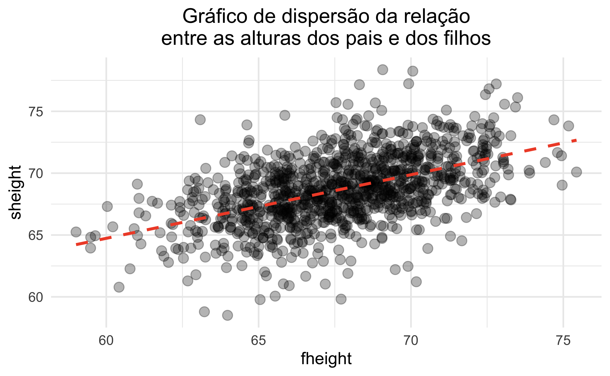
Peso dos carros X milhas/galão (Km/l)
Como você imagina que será a realação entre o peso dos carros e o consumo de combustível, observando a razão milhas/galão (Km/l)?
Carro mais pesados farão mais ou menos milhas/galão (Km/l)?
E os carros mais leves?
Tente fazer um desenho que represente essa relação
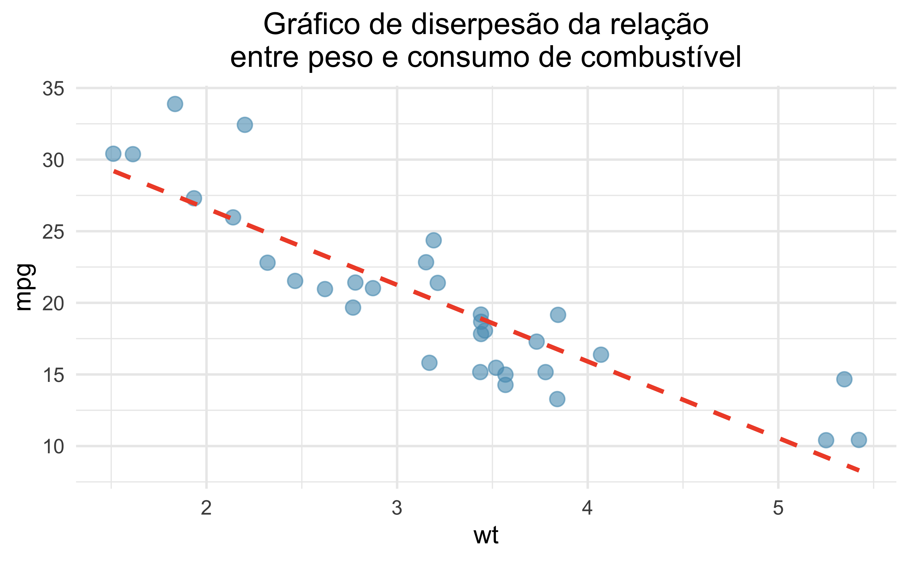
Quilate X Preço dos diamantes
Como você imagina que será a realação entre o quilate e o preço dos diamantes?
Diamantes com mais quilates serão mais ou menos caros?
E os diamantes com menos quilates?
Tente fazer um desenho que represente essa relação
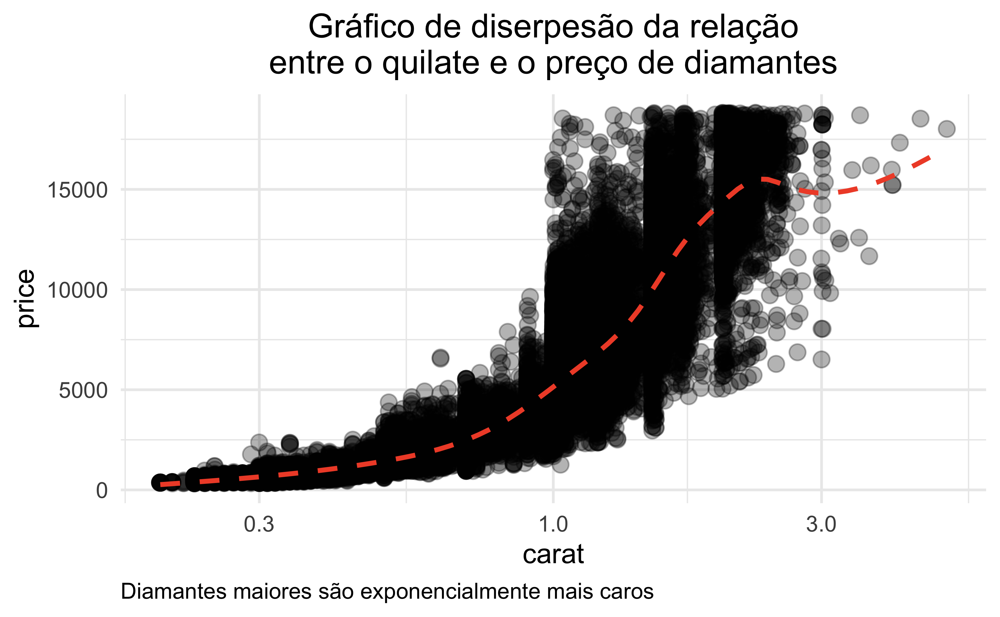
Relação entre o quilate e o preço de diamantes
Relação exponencial
Uma variável depende da outra elevada a uma potência constante
Crescimento ou decaimento rápido: a variável dependente aumenta ou diminui muito rapidamente à medida que a variável independente aumenta
Gráfico em forma de curva: o gráfico de uma relação exponencial é uma curva suave que se aproxima de zero em um dos extremos e cresce ou decresce rapidamente no outro extremo.
Não linearidade: a relação entre as variáveis não é linear, ou seja, não pode ser representada por uma linha reta.
Relação entre o quilate e o preço de diamantes
Relação exponencial entre o peso e o preço de diamantes:
Diamantes maiores são muito mais raros do que diamantes pequenos, o que aumenta seu preço drasticamente
Diamantes maiores geralmente possuem maior qualidade e pureza, o que também contribui para seu preço elevado
Gráficos de pontos e a média
O centro dos dados
A média é uma maneira de medir o centro de uma distribuição de dados
Os gráficos de pontos mostram o valor exato para cada observação
Como a média é calculada?
. . .
A fórmula da média:
\[
\bar{x} = \frac{\sum_{i=1}^n x_i}{n}
\]
. . .
A formula da média em um formato um pouco mais simples: \[
\bar{x} = \frac{x_1 + x_2 + \cdots + x_n}{n}
\]
Um pouco de nomenclaura
\(\mu\): média da popualação
\(\bar{x}\): média da amostra
\(x\): qualquer caso da amostra
\(x_i\): representa os valores individuais de forma genérica, onde \(i\) é um índice que varia de \(1\) (primeiro caso) até \(n\) (último caso)
\(n\): total de casos
O cáculo da média
Qual foi a média de temperatura dos cinco primeiros dias do mês de maio de 1973 em Nova York?
Month
Day
Temp
5
1
67
5
2
72
5
3
74
5
4
62
5
5
56
Tabela 6: Temperatura dos cinco primeiros dias do mês de maio de 1973 em Nova York
O cáculo da média
\[
\text{Temp} = \{67, 72, 74, 62, 56\}
\]
. . .
\[
\bar{X} = \frac{67 + 72 + 74 + 62 + 56}{5}
\]
. . .
\[
\bar{X} = \frac{331}{5}
\]
. . .
\[
\bar{X} = 66.2
\]
Consumo de combustível e peso de automóveis
Vamos calcular a média do consumo e do peso dos automóveis abaixo:
Resultados
Variável
Média
mpg
18.8
wt
3.3
Tabela 7: Médias de mpg e wt para uma amostra de automóveis
A média e a padronização de medidas
A média é útil porque nos permite redimensionar ou padronizar uma métrica em algo mais facilmente interpretável e comparável
A média e a padronização de medidas
Um novo medicamento é mais eficaz no tratamento de crises de asma do que o medicamento padrão?
Um teste com 1.500 adultos foi delineado:
500 receberam o novo medicamento
1.000 receberam um medicamento padrão no grupo de controle
Resultados
Qual medicamento é mais eficiente?
Droga
Pacientes
Ataques
Nova
500
200
Padrão
1000
300
Tabela 8: Resultados do experimento sobre o novo remédio pra asma
Resultados
Qual medicamento é mais eficiente?
Ataques/paciente:
Droga nova: \(200/500 = 0.4\)
Medicamento padrão: \(300/1000 = 0.3\)
. . .
Droga
Pacientes
Ataques
Ataques/paciente
Nova
500
200
0.4
Padrão
1000
300
0.3
Tabela 9: Resultados do experimento sobre o novo remédio pra asma: médias padronizadas
A média e a padronização de medidas
Avalie qual time de basquete tem melhor desempenho em um campeonato:
Time
Jogos
Pontuação Total
Mogi
20
1500
Fortaleza B. C. / CFO
18
1400
Pato Basquete
22
1600
Cerrado
21
1550
Tabela 10: Pontuações dos times de basquete
Tabela para os cálculos
Resultados
Time
Jogos
Pontuação Total
Pontos/jogo
Mogi
20
1500
75.0
Fortaleza B. C. / CFO
18
1400
77.8
Pato Basquete
22
1600
72.7
Cerrado
21
1550
73.8
Tabela 11: Pontuações dos times de basquete: médias padronizadas
Variância e desvio padrão
Variância e desvio padrão
A média foi introduzida como um método para descrever o centro de uma variável
A variabilidade nos dados também é importante:
Variância
Desvio padrão
Variância
A princípio, a fórmula da variância parece complicada, mas vamos analisá-la parte por parte e você verá como ela pode ser simples de entender.
Na tabela a seguir, estão as avaliações que o professor Zé recebeu de uma turma de cinco aluno em relação a uma disciplina ministrada. As notas atribuídas pelos alunos à avaliação do professor variavam de 1 a 5, onde 1 significa péssimo e 5 ótimo:
Tabela 15: Soma dos desvios ao quadrado das avaliações do professor Zé
\(SS =\) 5.2
Variância
Com a soma dos erros dos desvios ao quadrao (\(SS = 5.2\)), já resolvemos a parte de cima da equção! Sabenos o número de observações, então também já temos o valor de \(n\) (\(n =\) 5).
\[
s = \sqrt{\frac{\sum_{i=1}^n (x_i - \bar{x})^2}{n-1}} = \sqrt{s^2}
\]
Resultados
Os dois professores têm a mesma média, mas a desvio padrão no caso da professora Irene é bem mais alto. O que isso nos diz sobre os dados?
Professor
Média
Desvio padrão
Irene
2.6
1.82
Reinaldo
2.6
0.55
Tabela 16: Média e desvio padrão dos professores Reinaldo e Irene
Os dois professores tem a mesma médias nas avaliações dos alunos, mas as pontuações da professora Irene são mais dispersas, por isso o desvio padrão maior.
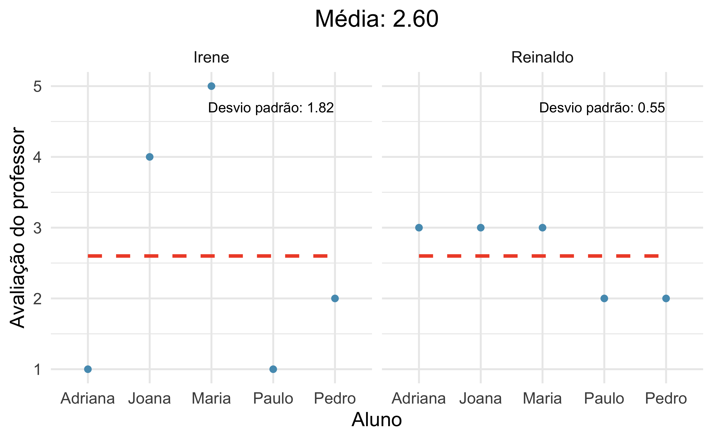
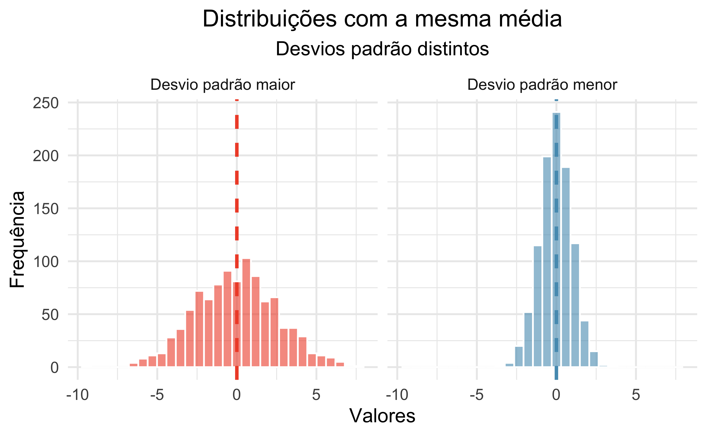
Aplicativo para ver a influência do desvio padrão na distribuição dos dados
Use o qr-code ou o link abaixo para acessar o aplicativo:
Tabela 22: Tabela de frequência do número de cilindros dos carros
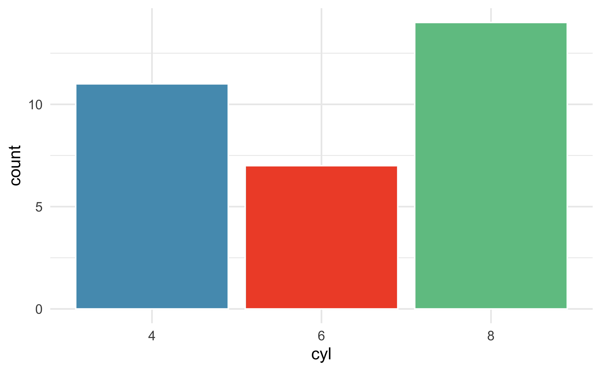
Diagrama de caixa, quartis e mediana
O diagrama de caixa
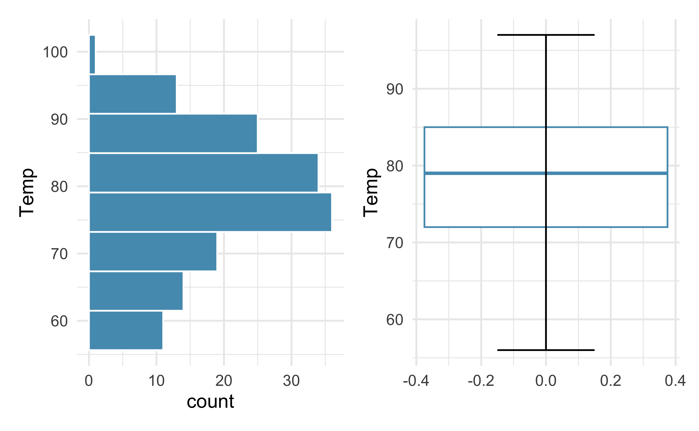
O diagrama de caixa
Um gráfico de caixa resume um conjunto de dados usando algumas estatísticas e também identifica observações incomuns:
Mediana
Primeiro quartil (25º percentil)
Terceiro quartil (75º percentil)
Intervalo interquartil
Bigodes
Mediana
É a linha escura dentro da caixa
Divide os dados pela metade, 50% ficam abaixo desse valor e 50% ficam acima
Quando a amostra é impar:
É observação que está no centro da amostra ordenada
\(\{2, 5, \color{red}{7}, 11, 15\}\)
Quando a amostra é par:
É a média das duas observações que estão no centro da amostra ordenada
\(\{2, 5, \color{red}{7, 9}, 11, 15\}\)
\(Mediana = \frac{7+9}{2} = 8\)
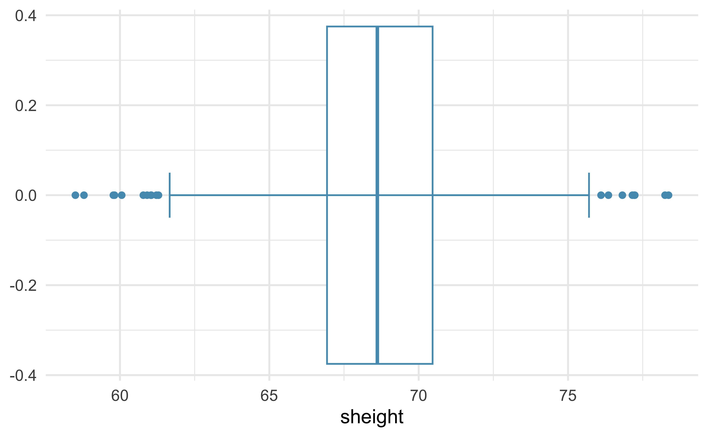
Primeiro quartil, terceiro quartil e intervalo interquartil
O comprimento da caixa: intervalo interquartil (IQR, na abreviatura em inglês),
É uma medida da variabilidade dos dados: quanto mais variação nos dados, maior o desvio padrão e o intervalo interquartil tendem a ser
Os dois limites da caixa são chamados de:
Primeiro quartil - o 25º percentil: 25% dos dados estão abaixo deste valor
Terceiro quartil - o 75º percentil: 75% dos dados estão abaixo deste valor
São frequentemente rotulados como Q1 e Q3, respectivamente
\(IQR = Q1 - Q3\)
Um percentil é um número com \(\alpha\%\) das observações abaixo e 100 - \(\alpha\%\) das observações acima. Por exemplo, o 90º percentil na média do ENEM tem 90% dos alunos abaixo desse valor e 10% dos alunos acima dele.
O intervalo interquartil como medida de variabilidade
Ambas as distribuições tem a mesma média
A distribuição em vermelho tem
Desvio padrão: 4.83
IQR: 6.28
A distribuição em azul tem:
Desvio padrão: 1.97
IQR: 2.67
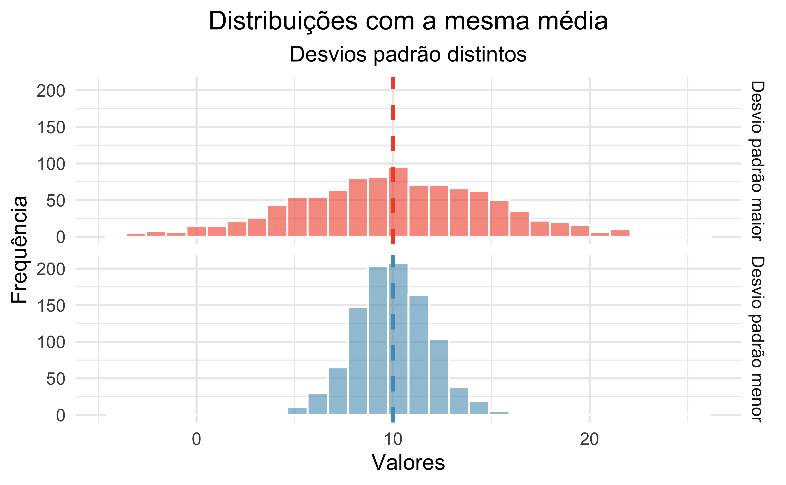
Whiskers (bigodes) e outliers (valores discrepantes)
Whiskers: capturaram a maior parte dos dados, excluindo os outliers
Se estendem até os valores máximo e mínimo, exceto quando há outliers
Outliers: pontos excepcionalmente altos ou baixos, marcados separadamente no gráfico
Indicam observações distantes do restante dos dados
Observações além de 1,5 x IQR dos quartis são outliers
Caixa como corpo, whiskers como braços tentando alcançar os dados até os outliers
Outliers são extremos
Um outlier é uma observação que parece extrema em relação ao restante dos dados. Examinar os dados para identificar outliers tem vários propósitos úteis, incluindo:
Identificar uma forte assimetria na distribuição,
Identificar possíveis erros de coleta de dados ou de entrada de dados, e
Fornecer insights sobre propriedades interessantes dos dados.
No entanto, tenha em mente que alguns conjuntos de dados têm uma assimetria naturalmente longa, e pontos fora do padrão (outliers) não representam necessariamente qualquer tipo de problema no conjunto de dados.
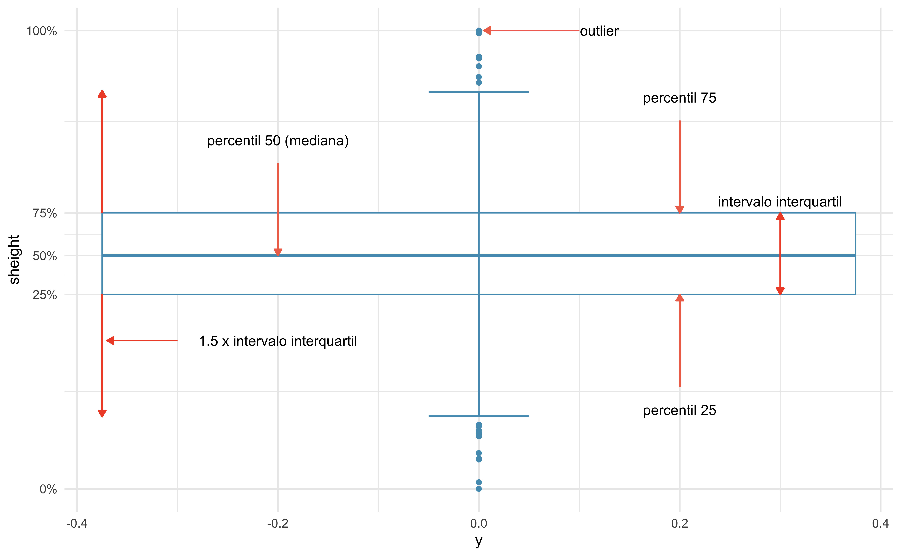
Estatísticas Robustas
Considere os cinco modelos de carro abaixo. Eles são os automóveis mais leves do banco de dados mtcars. O que aconteceria com as estatísticas dessa amostra se trocássemos o veículo mais leve (Lotus Europa) pelo quinto mais pesado de todo o banco de dados (Pontiac Firebird)? E o que aconteceria se o trocássemos pelo caro mais pesado de todos (Lincoln Continental)?
Modelo
wt
Lotus Europa
1.51
Honda Civic
1.61
Toyota Corolla
1.83
Fiat X1-9
1.94
Porsche 914-2
2.14
Estatísticas Robustas
Cenário
Mediana
IQR
Média
Desvio padrão
Dados originais
1.83
0.32
1.81
0.25
Sai Lotus Europa e entra Pontiac Firebird
1.94
0.31
2.27
0.90
Sai Lotus Europa e entra Lincoln Continental
1.94
0.31
2.59
1.60
Tabela 23: Uma comparação de como a mediana, o IQR, a média e o desvio padrão mudam à medida que o valor de uma observação extrema dos dados de interesse originais muda
Estatísticas Robustas
Estatísticas robustas: mediana e IQR são menos sensíveis a valores extremos
Mover valores extremos tem pouco impacto
Estatísticas não robustas: média e desvio padrão são mais afetados por outliers
A escolha entre estatísticas robustas e não robustas depende do contexto e da sensibilidade desejada a valores extremos
Qual é melhor, a média ou a mediana? Depende!
Considere os seguintes cenários: é melhor medir o lucro médio por cliente ou o lucro mediano por cliente?
Se a preocupação for sobre a margem de lucro geral da empresa, a média é uma medida melhor para avaliar o que está acontecendo na empresa. A empresa pode ter um lucro mediano positivo por cliente e ainda assim não ser lucrativa.
Se a preocupação for sobre entender o lucro por cliente típico, possivelmente para entender o espaço de crescimento para o lucro da empresa, o lucro mediano por cliente lhe diria mais sobre os lucros individuais dos clientes.
Preço dos diamantes
A distribuição de valores do preço dos diamantes no banco de dados diamonds é assimétrico para a direita, com alguns diamantes caros na cauda direita. Se quiséssemos entender o preço típico de um diamante, você deveria estar mais interessado na média ou mediana?
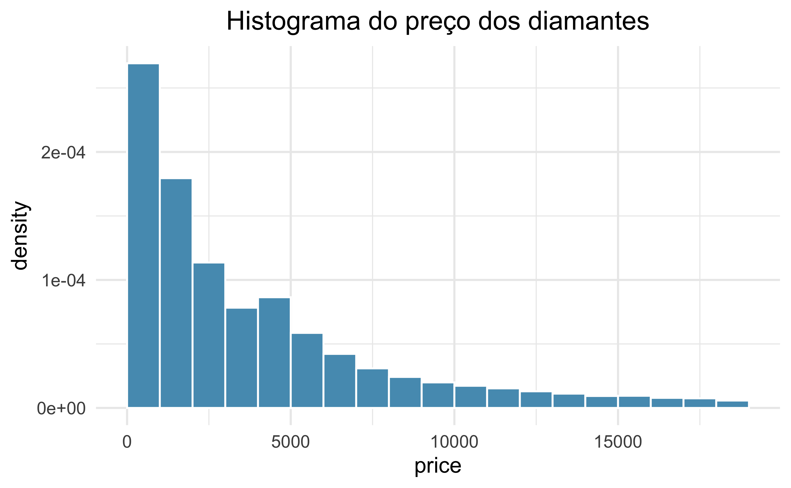
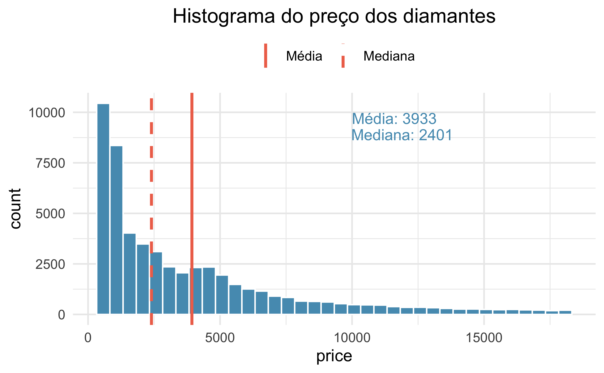
Transformação dos dados
Transformação de dados assimétricos
Quando os dados são muito assimétricos, as vezes é preciso transformá-los para que seja mais fácil construir modelos. Abaixo estão a distribuição do preço dos diamantes e sua transformação logarítmica. Uma transformação é um redimensionamento dos dados usando uma função.
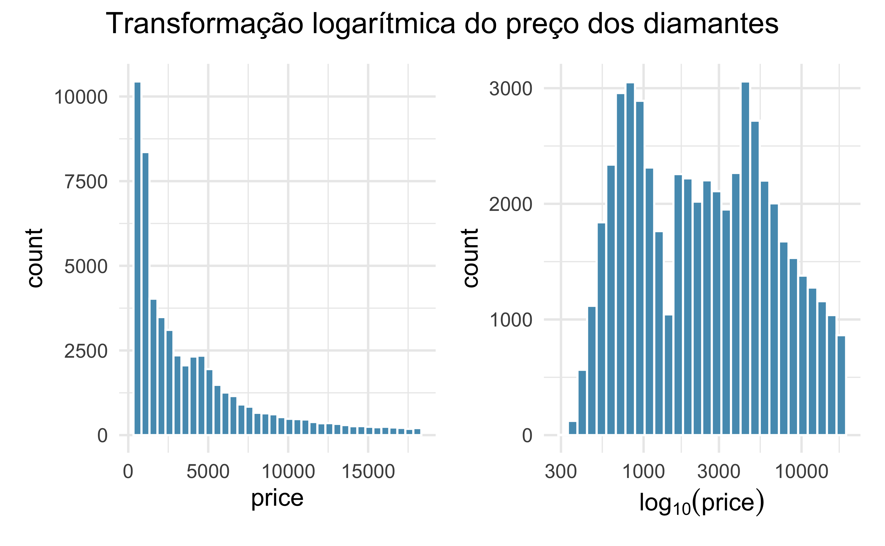
Transformação de dados assimétricos
Os dados transformados são simétricos, e quaisquer outliers potenciais parecem muito menos extremos do que no conjunto de dados original. Ao controlar os outliers e a distorção extrema, as transformações geralmente facilitam a construção de modelos estatísticos para os dados.
Transformação de dados assimétricos
Outras transformações possíveis: \[
\sqrt{\text{variável original}}
\]
\[
\frac{1}{\text{variável original}}
\]
Notas de rodapé
Use os termos dependente e independente com ressalvas, pois estão sendo aplicados fora do contexto de um experimento.↩︎
Mantivemos somente as mortes por causas naturais e de pessoas que faleceram com menos de 80 anos↩︎
Código fonte
---title: "Exploração de dados numéricos"format: revealjs: logo: img/brasao1_horizontal_cor_300dpi.png theme: simple css: logo.cssprogress: trueslide-number: trueeditor: visualeditor_options: chunk_output_type: console---```{r}#| include: falsesource("./_common.R")``````{r}#| label: setuplibrary(tidyverse)library(janitor)library(UsingR)library(carData)library(palmerpenguins)library(gt)library(scales)library(ggthemes)library(patchwork)library(DT)library(psych)conflicted::conflicts_prefer(dplyr::filter())conflicted::conflicts_prefer(dplyr::select())conflicted::conflicts_prefer(dplyr::lag())conflicted::conflicts_prefer(dplyr::summarize)conflicted::conflicts_prefer(dplyr::summarise)conflicted::conflicts_prefer(scales::alpha)conflicted::conflicts_prefer(scales::rescale)``````{r}#| label: datafather.son <- father.son |>as_tibble() airquality <- airquality |>as_tibble()age_data <-read_csv("data/AgeDataset-V1.csv")brasileiro <-read_csv("data/brasileiro_2014_2023.csv")gols_brasileiro <-read_csv("data/gols_por_partida_2014_2023.csv")```## O que vamos aprender?- Explorar dados numéricos usando: - Estatisticas descritivas e gráficos# Bancos de dados utilizados## {background-image="img/pai-e-filho.png" background-size="contain"}## `father.son`Conjunto de dados de Pearson sobre alturas de pais e filhos- Formato: Um banco de dados com 1078 observações e duas variáveis - `fheight`: altura do pai em polegadas - `sheight`: altura do filho em polegadas## Uma olhada em `father.son````{r}#| label: tbl-pai-e-filho#| tbl-cap: Uma amostra aleatória de dez casos do banco de dados `father.son`#| tbl-cap-location: bottomfather.son |>slice_sample(n =10) |>gt() |>fmt_number(decimals =1 ) |>cols_align(align ="center" ) |>tab_options(table.width =pct(100),table.font.size ="26px" ) |>opt_stylize(style =1, color ="gray" )```## {background-image="img/mtcars.png" background-size="contain"}## `mtcars` {.smaller}::: {style="font-size: 18pt;"}Os dados foram extraídos da revista Motor Trend US de 1974 e abrangem o consumo de combustível e 10 aspectos do design e desempenho de automóveis para 32 carros (modelos de 1973-74)- Formato: Um banco de dados com `r nrow(mtcars)` observações e `r ncol(mtcars)` variáveis. - `mpg`: milhas/galão (km/l) - `cyl`: número de cilindros - `disp`: cilindrada (polegadas cúbicas) - `hp`: potência bruta (cavalos de potência) - `drat`: relação de transmissão do eixo traseiro - `wt`: peso (1000 lbs) - `qsec`: tempo para 1/4 de milha - `vs`: motor (0 = em forma de V, 1 = reto) - `am`: transmissão (0 = automática, 1 = manual) - `gear`: número de marchas para frente - `carb`: número de carburadores:::## Uma olhada em `mtcars````{r}#| label: tbl-mtcars#| tbl-cap: Uma amostra aleatória de dez casos do banco de dados `mtcars`#| tbl-cap-location: bottom set.seed(123)mtcars <- mtcars |>rownames_to_column(var ="Modelo") |>as_tibble()mtcars |>select(Modelo, wt, mpg, cyl) |>slice_sample(n =10) |>gt() |>fmt_number(decimals =1 ) |>cols_align(align ="center" ) |>tab_options(table.width =pct(100),table.font.size ="26px" ) |>opt_stylize(style =1, color ="gray" )```## `diamonds`Um conjunto de dados contendo os preços e outros atributos de quase 54.000 diamantes.- Formato: Um banco de dados com 53940 observações e algumas variáveis. Vamos usar: - `price`: preço em dólares americanos - `carat`: peso do diamante (quilates)## Uma olhada em `diamonds````{r}#| label: tbl-diamonds #| tbl-cap: Uma amostra aleatória de dez casos do banco de dados `diamonds `#| tbl-cap-location: bottom diamonds |>select(carat, price) |>slice_sample(n =10) |>gt() |>fmt_number(decimals =1 ) |>cols_align(align ="center" ) |>tab_options(table.width =pct(100),table.font.size ="26px" ) |>opt_stylize(style =1, color ="gray" )```## {background-image="img/nova-york.png" background-size="contain"}## `airquality` {.smaller}Medições diárias da qualidade do ar em Nova York, de maio a setembro de 1973- Formato: Um banco de dados com 153 observações e seis variáveis - `Ozone`: quantidade de ozônio (ppb - partes por bilhão) - `Solar.R`: irradiaçao solar (lang - 1 lang é igual a um caloria por centímetro quadrado) - `Wind`: velocidade do vento (mph - milhas por hora) - `Temp`: temperatura (F - graus Fahrenheit) - `Month`: mês da medição - `Day`: dia da medição## Uma olhada em `airquality````{r}#| label: tbl-airquality#| tbl-cap: Uma amostra dos dez primeiros casos do banco de dados `airquality`#| tbl-cap-location: bottom airquality |>slice(1:10) |>gt() |>fmt_number(decimals =0 ) |>cols_align(align ="center" ) |>tab_options(table.width =pct(100),table.font.size ="26px" ) |>opt_stylize(style =1, color ="gray" )```## `Age dataset`O conjunto de dados contém informações estruturadas sobre a vida, obra e morte de mais de 1 milhão de pessoas famosas falecidas.- Formato: Um banco de dados com 1.223.009 observações e algumas variáveis, por hora vamos usar: - `Age of death`: idade com que a pessoa morrreu## Uma olhada em `Age dataset````{r}#| label: tbl-agedata#| tbl-cap: Uma amostra de dez casos do banco de dados `Age dataset`#| tbl-cap-location: bottom age_data |>filter(Country =="Brazil", Name %in%c("Hebe Camargo", "Ayrton Senna","Carlos Lacerda", "João Guimarães Rosa","João Goulart", "Glauber Rocha","Arthur Bispo do Rosário", "Sócrates","Getúlio Vargas", "Paulo Freire")) |>select(Name, `Age of death`) |>slice_sample(n =10) |>gt() |>cols_align(align ="center" ) |>tab_options(table.width =pct(100),table.font.size ="26px" ) |>opt_stylize(style =1, color ="gray" )```# Gráficos de dispersão para dados pareados## Gráficos de dispersão {.smaller}- Eixo x: variável independente[^1]- Eixo y: variável dependente[^1]: Use os termos dependente e independente com ressalvas, pois estão sendo aplicados fora do contexto de um experimento.::: panel-tabset### Dados```{r}x <-c(1, 2, 3, 4, 5)y <-1+2*xid <- letters[1:length(x)]dispersao <-tibble(id, x, y)dispersao |>slice(1:6) |>gt()|>cols_align(align ="center" ) |>tab_options(table.width =pct(75), table.font.size ="26px" ) |>opt_stylize(style =1, color ="gray" )```### Gráfico```{r}#| out-width: 50%dispersao |>ggplot(aes(x, y) ) +geom_point(color ="#569BBD", alpha =0.6,size =3 ) +geom_segment(x = x, xend = x, color ="#F05133",y = (y-0.15), yend =0, linetype =2 ) +geom_segment(x =0, xend = x-0.02, color ="#F05133",y = y, yend = y, linetype =2 ) +scale_y_continuous(breaks = y)```:::## Alturas dos pais X altura dos Filhos- Como você imagina que será a realação entre as auturas dos pais e dos filhos? - Pais mais altos terão filhos mais altos ou mais baixos? - E os pais mais baixos?- Tente fazer um desenho que represente essa relação## {#slide6-id data-menu-title="Gráfico de dispersão da relação entre as alturas dos pais e dos filhos"}```{r}#| label: scatter-plot-fheight-sheightfather.son |>ggplot(aes(fheight, sheight) ) +geom_jitter(color ="#000000", alpha =0.3, size =3 ) +geom_smooth(method ="lm", se = F,color ="#F05133", linetype =2 ) +labs(title ="Gráfico de dispersão da relação\nentre as alturas dos pais e dos filhos" ) +theme(plot.title =element_text(hjust =0.5) )```## Peso dos carros X milhas/galão (Km/l)- Como você imagina que será a realação entre o peso dos carros e o consumo de combustível, observando a razão milhas/galão (Km/l)? - Carro mais pesados farão mais ou menos milhas/galão (Km/l)? - E os carros mais leves?- Tente fazer um desenho que represente essa relação## {#slide9-id data-menu-title="Gráfico de diserpesão da relação entre peso e consumo de combustível"}```{r}#| label: scatter-plot-wt-mpgmtcars |>ggplot(aes(wt, mpg) ) +geom_jitter(color ="#569BBD", alpha =0.6,size =3 ) +geom_smooth(method ="lm", se = F,color ="#F05133",linetype =2 ) +labs(title ="Gráfico de diserpesão da relação\nentre peso e consumo de combustível" ) +theme(plot.title =element_text(hjust =0.5) )```## Quilate X Preço dos diamantes- Como você imagina que será a realação entre o quilate e o preço dos diamantes? - Diamantes com mais quilates serão mais ou menos caros? - E os diamantes com menos quilates?- Tente fazer um desenho que represente essa relação## {#slide12-id data-menu-title="Gráfico de diserpesão da relação entre o quilate e o preço de diamantes"}```{r}#| label: scatter-plot-carat-pricescatter_plot_carat_price <- diamonds |>ggplot(aes(carat, price) ) +geom_jitter(color ="#000000", alpha =0.3, size =3 ) +geom_smooth(se = F, color ="#F05133",linetype =2 ) +scale_x_log10() +labs(title ="Gráfico de diserpesão da relação\nentre o quilate e o preço de diamantes",caption ="Diamantes maiores são exponencialmente mais caros" ) +theme(plot.title =element_text(hjust =0.5),plot.caption =element_text(hjust =0) ) scatter_plot_carat_price```## Relação entre o quilate e o preço de diamantes {.smaller}- Relação exponencial - Uma variável depende da outra elevada a uma potência constante - Crescimento ou decaimento rápido: a variável dependente aumenta ou diminui muito rapidamente à medida que a variável independente aumenta - Gráfico em forma de curva: o gráfico de uma relação exponencial é uma curva suave que se aproxima de zero em um dos extremos e cresce ou decresce rapidamente no outro extremo. - Não linearidade: a relação entre as variáveis não é linear, ou seja, não pode ser representada por uma linha reta.## Relação entre o quilate e o preço de diamantes- Relação exponencial entre o peso e o preço de diamantes: - Diamantes maiores são muito mais raros do que diamantes pequenos, o que aumenta seu preço drasticamente - Diamantes maiores geralmente possuem maior qualidade e pureza, o que também contribui para seu preço elevado# Gráficos de pontos e a média## O centro dos dados- A média é uma maneira de medir o centro de uma distribuição de dados- Os gráficos de pontos mostram o valor exato para cada observação## {#slide19-id data-menu-title="Gráfico de pontos para temperatura de Nova York"}```{r}#| label: dot-plot-Tempmedia <-mean(airquality$Temp)media <-round(media, 2)airquality |>ggplot(aes(Temp) ) +geom_dotplot(color ="#569BBD", fill ="#569BBD", dotsize =0.7 ) +annotate("point", media, -0.05,color ="#F05133", fill ="#F05133", shape =24, size =4 ) +labs(title ="Gráfico de pontos para a temperatura de Nova York",subtitle ="Maio a setembro de 1973",caption ="O triângulo vermelho indica a posição da média" ) +theme(axis.title.y =element_blank(),axis.text.y =element_blank(),axis.ticks.y =element_blank(),axis.line.y =element_blank(),plot.title =element_text(hjust =0.5),plot.subtitle =element_text(hjust =0.5),plot.caption =element_text(hjust =0) )```## Como a média é calculada?. . .A fórmula da média:$$ \bar{x} = \frac{\sum_{i=1}^n x_i}{n}$$. . .A formula da média em um formato um pouco mais simples: $$ \bar{x} = \frac{x_1 + x_2 + \cdots + x_n}{n}$$## Um pouco de nomenclaura::: incremental- $\mu$: média da popualação- $\bar{x}$: média da amostra- $x$: qualquer caso da amostra- $x_i$: representa os valores individuais de forma genérica, onde $i$ é um índice que varia de $1$ (primeiro caso) até $n$ (último caso)- $n$: total de casos:::## O cáculo da médiaQual foi a média de temperatura dos cinco primeiros dias do mês de maio de 1973 em Nova York?```{r}#| label: tbl-cinco-dias-airquality#| tbl-cap: Temperatura dos cinco primeiros dias do mês de maio de 1973 em Nova York#| tbl-cap-location: bottomairquality |>filter(Month ==5, Day <=5) |>select(Month, Day, Temp) |>gt() |>fmt_number(decimals =0 ) |>cols_align(align ="center" ) |>tab_options(table.width =pct(100), table.font.size ="26px" ) |>opt_stylize(style =1, color ="gray" )```## O cáculo da média$$\text{Temp} = \{67, 72, 74, 62, 56\}$$. . .$$\bar{X} = \frac{67 + 72 + 74 + 62 + 56}{5}$$. . .$$\bar{X} = \frac{331}{5}$$. . .$$\bar{X} = 66.2$$## Consumo de combustível e peso de automóveis {.smaller}Vamos calcular a média do consumo e do peso dos automóveis abaixo:```{r}set.seed(123)mtcars |>as_tibble() |>slice_sample(n =5) |>select(Modelo, mpg, wt) |>add_row(Modelo ="Média", mpg =NA, wt =NA) |>datatable(rownames = F, editable = T,options =list(lengthChange =FALSE,dom ='t', ordering =FALSE,columnDefs =list(list(className ='dt-center', targets ="_all")),headerCallback = DT::JS("function(thead) {"," $(thead).css('font-size', '0.75em');","}" ) ),class ='cell-border stripe' ) |>formatRound(columns =c("mpg", "wt"),digits =1 ) |>formatStyle(columns ="Modelo",valueColumns ="Modelo",target ='cell',textAlign =styleEqual('Média', 'right') ) |>formatStyle(columns ="Modelo",valueColumns ="Modelo",target ='cell',textAlign =styleEqual(c("Maserati Bora", "Cadillac Fleetwood","Honda Civic", "Merc 450SLC", "Datsun 710"),'left') )```## Resultados```{r}#| label: tbl-resultados-media-mtcars#| tbl-cap: Médias de `mpg` e `wt` para uma amostra de automóveis#| tbl-cap-location: bottomset.seed(123)mtcars |>slice_sample(n =5) |>summarise(across(c(mpg, wt),list( Média = \(x) mean(x, na.rm = T) |>round(1) )) ) |>pivot_longer(cols =everything(),names_to =c("Variável", ".value"),names_sep ="_" ) |>gt() |>cols_align(columns =2,align ="center" ) |>tab_options(table.width =pct(50),table.font.size ="26px" ) |>tab_style(style =cell_text(align ="center"),locations =cells_column_labels(columns = Variável) ) |>opt_stylize(style =1, color ="gray" ) ```## A média e a padronização de medidas- A média é útil porque nos permite redimensionar ou padronizar uma métrica em algo mais facilmente interpretável e comparável## A média e a padronização de medidas- Um novo medicamento é mais eficaz no tratamento de crises de asma do que o medicamento padrão?- Um teste com 1.500 adultos foi delineado: - 500 receberam o novo medicamento - 1.000 receberam um medicamento padrão no grupo de controle## ResultadosQual medicamento é mais eficiente?```{r}#| label: tbl-asma#| tbl-cap: Resultados do experimento sobre o novo remédio pra asma#| tbl-cap-location: bottomasma <-tribble(~Droga, ~Pacientes, ~Ataques,"Nova", 500, 200,"Padrão", 1000, 300) |>mutate("Ataques/paciente"= Ataques/Pacientes ) asma |>gt() |>cols_hide(columns =4 ) |>cols_align(align ="center", ) |>tab_options(table.width =pct(100), table.font.size ="26px" ) |>opt_stylize(style =1, color ="gray" )```## Resultados::: incremental- Qual medicamento é mais eficiente? - Ataques/paciente: - Droga nova: $200/500 = 0.4$ - Medicamento padrão: $300/1000 = 0.3$:::. . .```{r}#| label: tbl-asma-medias#| tbl-cap: "Resultados do experimento sobre o novo remédio pra asma: médias padronizadas"#| tbl-cap-location: bottomasma |>gt() |>cols_align(align ="center", ) |>tab_options(table.width =pct(100), table.font.size ="26px" ) |>opt_stylize(style =1, color ="gray" )```## A média e a padronização de medidasAvalie qual time de basquete tem melhor desempenho em um campeonato:```{r}#| label: tbl-basquete#| tbl-cap: Pontuações dos times de basquete#| tbl-cap-location: bottombasquete <-tribble(~Time, ~Jogos, ~"Pontuação Total", ~'Pontos/jogo',"Mogi", 20, 1500, NA,"Fortaleza B. C. / CFO", 18, 1400, NA,"Pato Basquete", 22, 1600, NA,"Cerrado", 21, 1550, NA)basquete |>select(-`Pontos/jogo`) |>gt() |>cols_align(columns =c(Jogos, 'Pontuação Total'),align ="center" ) |>tab_options(table.width =pct(100),table.font.size ="26px" ) |>tab_style(style =cell_text(align ="center"),locations =cells_column_labels(columns = Time) ) |>opt_stylize(style =1, color ="gray" ) ```## Tabela para os cálculos```{r}basquete |>datatable(rownames = F, editable = T,options =list(lengthChange =FALSE,dom ='t', ordering =FALSE,columnDefs =list(list(className ='dt-center', targets ="_all")),headerCallback = DT::JS("function(thead) {"," $(thead).css('font-size', '0.75em');","}" ) ),class ='cell-border stripe' ) |>formatStyle(columns ='Time',valueColumns ='Time',target ='cell',textAlign =styleEqual(c('Mogi', 'Fortaleza B. C. / CFO','Pato Basquete', 'Cerrado'), 'left') ) |>formatStyle(columns =c(1, 2), fontSize ='70%')```## Resultados```{r}#| label: tbl-basquete-medias#| tbl-cap: "Pontuações dos times de basquete: médias padronizadas"#| tbl-cap-location: bottombasquete |>mutate('Pontos/jogo'=`Pontuação Total`/Jogos ) |>gt() |>cols_align(columns =c(Jogos, "Pontuação Total",'Pontos/jogo'),align ="center" ) |>fmt_number(columns ='Pontos/jogo', decimals =1 ) |>tab_options(table.width =pct(100),table.font.size ="26px" ) |>tab_style(style =cell_text(align ="center"),locations =cells_column_labels(columns = Time) ) |>opt_stylize(style =1, color ="gray" )```# Variância e desvio padrão## Variância e desvio padrão- A média foi introduzida como um método para descrever o centro de uma variável- A variabilidade nos dados também é importante: - Variância - Desvio padrão## VariânciaA princípio, a fórmula da variância parece complicada, mas vamos analisá-la parte por parte e você verá como ela pode ser simples de entender.$$s^2 = \frac{\sum_{i=1}^n (x_i - \bar{x})^2}{n-1}$$## Avaliações do professor Zé {.smaller}Na tabela a seguir, estão as avaliações que o professor Zé recebeu de uma turma de cinco aluno em relação a uma disciplina ministrada. As notas atribuídas pelos alunos à avaliação do professor variavam de 1 a 5, onde 1 significa péssimo e 5 ótimo:```{r}#| label: tbl-av_prof#| tbl-cap: Avaliações do professor Zé#| tbl-cap-location: bottomav_prof <-tribble(~Aluno, ~"Avaliação do professor","Joana", 1,"Paulo", 2,"Maria", 3,"Adriana", 3,"Pedro", 4)desvios <-tribble(~"Observaçao - média","1 - 2.6","2 - 2.6","3 - 2.6","3 - 2.6","4 - 2.6" )m_av <-mean(av_prof$`Avaliação do professor`)av_prof <- av_prof |>bind_cols(desvios) |>mutate("Desvio da média"=`Avaliação do professor`- m_av,"Desvio ao quadrado"=`Desvio da média`^2 )av_prof |>select(Aluno, `Avaliação do professor`) |>gt() |>cols_align(align ="center") |>tab_options(table.width =pct(100), table.font.size ="22px") |>grand_summary_rows(columns ="Avaliação do professor",fns =list( Média ~mean(.) ),fmt =~fmt_number(., decimals =1),missing_text ="" ) |>opt_stylize(style =1, color ="gray" ) |>tab_style(locations =list(cells_grand_summary(), cells_stub_grand_summary()),style =cell_fill(color ="gray"|>adjust_luminance(steps =+2)) ) |>tab_style(style =list(cell_text( align ="right") ),locations =cells_stub_grand_summary() ) |>tab_style(locations =list(cells_stub()),style =cell_fill(color ="white") )```$\bar{x} =$ `r m_av`## Desvios da média: $x_i - \bar{x}$ {.smaller}$$s^2 = \frac{\sum_{i=1}^n \color{red}{(x_i - \bar{x})}^2}{n-1}$$## Desvios da média: $x_i - \bar{x}$ {.smaller}Note que a média em algums momentos subestima a avaliação dada por cada aluno e, em outros, superestima.Chamamos de desvio a distância de uma observação da média da variável.$\bar{x} =$ `r m_av````{r}#| label: tbl-desviso-prof-ze#| tbl-cap: Desvios da média das avaliações do professor Zé#| tbl-cap-location: bottomav_prof |>select(Aluno:`Desvio da média`) |>gt() |>cols_align(align ="center" ) |>tab_options(table.width =pct(100),table.font.size ="22px" ) |>opt_stylize(style =1, color ="gray" )```## ```{r}av_prof |>mutate(texto_y = (`Avaliação do professor`+ m_av) /2 ) |>ggplot(aes(fct_reorder(Aluno, `Avaliação do professor`, min), `Avaliação do professor`)) +geom_point(color ="#569BBD", size =3) +annotate("segment", x =1, xend =5, y = m_av, yend = m_av, linetype =2, color ="#F05133", linewidth =1) +geom_segment(aes(x = Aluno, xend = Aluno, y =`Avaliação do professor`, yend = m_av), color ="#569BBD") +geom_text(aes(x = Aluno, y = texto_y, label =round(`Desvio da média`, 1)),vjust =-0.5, hjust =-0.5,size =4) +labs(x ="Aluno",y ="Avaliação do professor Zé",title ="Desvios da média" ) +theme(plot.title =element_text(hjust =0.5) )```## Soma dos desvios {.smaller}Agora que já temos os desvios, para saber a variabilidade total dos dados podemos somá-los, certo?```{r}#| label: tbl-soma-desvios-ze#| tbl-cap: Soma dos desvios da média das avaliações do professor Zé#| tbl-cap-location: bottomav_prof |>select(Aluno:`Desvio da média`) |>gt() |>cols_align(align ="center" ) |>tab_options(table.width =pct(100),table.font.size ="22px" ) |>opt_stylize(style =1, color ="gray" ) |>grand_summary_rows(columns ="Desvio da média",fns =list( Soma ~sum(.) ),fmt =~fmt_number(., decimals =0), missing_text ="" ) |>tab_style(locations =list(cells_grand_summary(), cells_stub_grand_summary()),style =cell_fill(color ="gray"|>adjust_luminance(steps =+2)) ) |>tab_style(style =list(cell_text( align ="right") ),locations =cells_stub_grand_summary() ) |>tab_style(locations =list(cells_stub()),style =cell_fill(color ="white") )```Zero? Esse resultado não faz sentido, porque claramente há variabilidade, como visto no gráfico anterior.## Soma dos desvios ao quadrado$$s^2 = \frac{\sum_{i=1}^n \color{red}{(x_i - \bar{x})^2}}{n-1}$$## Soma dos desvios ao quadradoPara evitar que os valores positivos e negativos se cancelem na soma e dar mais peso aos desvios maiores, elevamos os desvios ao quadrado:$${SS} = \sum_{i=1}^n (x_i - \bar{x})^2 = \sum(x_i - \bar{x})(x_i - \bar{x}) $$## Soma dos desvios ao quadrado```{r}#| label: tbl-soma-desivos-quadrado-ze#| tbl-cap: Soma dos desvios ao quadrado das avaliações do professor Zé#| tbl-cap-location: bottomss <-sum(av_prof$`Desvio ao quadrado`)av_prof |>gt() |>cols_align(align ="center" ) |>tab_options(table.width =pct(100),table.font.size ="22px" ) |>opt_stylize(style =1, color ="gray" ) |>grand_summary_rows(columns ="Desvio ao quadrado",fns =list( Soma ~sum(.) ),fmt =~fmt_number(., decimals =1), missing_text ="" ) |>tab_style(locations =list(cells_grand_summary(), cells_stub_grand_summary()),style =cell_fill(color ="gray"|>adjust_luminance(steps =+2)) ) |>tab_style(style =list(cell_text( align ="right") ),locations =cells_stub_grand_summary() ) |>tab_style(locations =list(cells_stub()),style =cell_fill(color ="white") )```$SS =$ `r ss`## Variância {.smaller}```{r}n_prof_ze <-length(av_prof[, !is.na("Avaliação do professor")])```Com a soma dos erros dos desvios ao quadrao ($SS = 5.2$), já resolvemos a parte de cima da equção! Sabenos o número de observações, então também já temos o valor de $n$ ($n =$ `r n_prof_ze`).$$s^2 = \frac{\sum_{i=1}^n (x_i - \bar{x})^2}{n-1} = \frac{\color{red}{\text{SS}}}{n-1} = \frac{5.2}{n-1} $$$$s^2 = \frac{5.2}{5-1} = \frac{5.2}{4} = 1.3$$$$s^2 = 1.3$$## Desvio padrão {.smaller}- A variância não permite uma interpretação intuitiva da variabilidade, pois os valores são apresentados elevados ao quadrado- O desvio padrão é, portanto, a raiz quadrada da variância$$s = \sqrt{s^2}$$$$s = \sqrt{\frac{\sum_{i=1}^n (x_i - \bar{x})^2}{n-1}}$$## Desvio padrão```{r}var_prof_ze <-var(av_prof$`Avaliação do professor`)dp_prof_ze <-sd(av_prof$`Avaliação do professor`)```Se já sabemos a variância das notas do professor Zé ($s^2$ = `r var_prof_ze`), para calcular o desvio padrão ($s$), basta tirar a raiz quadrada desse valor:$$s = \sqrt{1.3} = 1.14$$## Desvio padrãoÉ um tipo de distância típica de uma observação em relação à média (raiz quadrada da variância).- Propriedades: - É maior do zero - Só é igual a zero se todas as observações forem iguais - Quanto maior a variabilidade, maior o desvio padrão## Avaliações da professora Irene e professor ReinaldoVamos calcular a média e o desvio padrão para as avaliações da professora Irente e do professor Reinaldo.## {.smaller}::: panel-tabset### Tabela para os cálculos {.smaller}```{r}#| label: prof-irene-tabela-calculosav_prof_irene_reinaldo <-tribble(~"Aluno", ~"Avaliação do professor", ~"Desvio da média", ~"Desviso ao quadrado", ~"Professor","Joana", 4, NA, NA, "Irene","Paulo", 1, NA, NA, "Irene","Maria", 5, NA, NA, "Irene","Adriana", 1, NA, NA, "Irene", "Pedro", 2, NA, NA, "Irene","Joana", 3, NA, NA, "Reinaldo", "Paulo", 2, NA, NA, "Reinaldo","Maria", 3, NA, NA, "Reinaldo","Adriana", 3, NA, NA, "Reinaldo","Pedro", 2, NA, NA, "Reinaldo" )av_prof_irene_reinaldo |>filter(Professor =="Irene") |>select(-Professor) |>datatable(rownames = F, editable = T,options =list(lengthChange =FALSE,dom ='t', ordering =FALSE,columnDefs =list(list(className ='dt-center', targets ="_all")),headerCallback = DT::JS("function(thead) {"," $(thead).css('font-size', '0.75em');","}" ) ),class ='cell-border stripe' ) |>formatStyle(columns ='Aluno',valueColumns ='Aluno',target ='cell',textAlign =styleEqual(c('Joana', "Paulo","Maria", "Adriana","Pedro"), 'left') ) |>formatStyle(columns =c(1, 2), fontSize ='70%')``````{r}res_profs <-tribble(~"", ~"Valor","n", NA,"Média", NA,"Soma dos devios ao quadrado", NA,"Variância", NA, "Desvio padrão", NA)res_profs <- res_profs |>datatable(rownames = F, editable = T,options =list(lengthChange =FALSE,dom ='t', ordering =FALSE,columnDefs =list(list(className ='dt-center', targets ="Valor")),headerCallback = DT::JS("function(thead) {"," $(thead).css('font-size', '0.75em');","}" ) ),class ='cell-border stripe' ) |>formatStyle(columns =c(1, 2), fontSize ='70%')res_profs```### Fórmulas {.smaller}$${SS} = \sum_{i=1}^n (x_i - \bar{x})^2 = \sum(x_i - \bar{x})(x_i - \bar{x})$$$$s^2 = \frac{\sum_{i=1}^n (x_i - \bar{x})^2}{n-1} = \frac{\text{SS}}{n-1} $$$$s = \sqrt{\frac{\sum_{i=1}^n (x_i - \bar{x})^2}{n-1}} = \sqrt{s^2}$$:::## {.smaller}::: panel-tabset### Tabela para os cálculos {.smaller}```{r}#| label: prof-reinaldo-tabela-calculosav_prof_irene_reinaldo |>filter(Professor =="Reinaldo") |>select(!Professor) |>datatable(rownames = F, editable = T,options =list(lengthChange =FALSE,dom ='t', ordering =FALSE,columnDefs =list(list(className ='dt-center', targets ="_all")),headerCallback = DT::JS("function(thead) {"," $(thead).css('font-size', '0.75em');","}" ) ),class ='cell-border stripe' ) |>formatStyle(columns ='Aluno',valueColumns ='Aluno',target ='cell',textAlign =styleEqual(c('Joana', "Paulo","Maria", "Adriana","Pedro"), 'left') ) |>formatStyle(columns =c(1, 2), fontSize ='70%')``````{r}res_profs ```### Fórmulas {.smaller}$${SS} = \sum_{i=1}^n (x_i - \bar{x})^2 = \sum(x_i - \bar{x})(x_i - \bar{x})$$$$s^2 = \frac{\sum_{i=1}^n (x_i - \bar{x})^2}{n-1} = \frac{\text{SS}}{n-1} $$$$s = \sqrt{\frac{\sum_{i=1}^n (x_i - \bar{x})^2}{n-1}} = \sqrt{s^2}$$:::## ResultadosOs dois professores têm a mesma média, mas a desvio padrão no caso da professora Irene é bem mais alto. O que isso nos diz sobre os dados?```{r}#| label: tbl-m-dp-irene-reinaldo#| tbl-cap: Média e desvio padrão dos professores Reinaldo e Irene#| tbl-cap-location: bottomav_prof_irene_reinaldo |>summarise( Média =mean(`Avaliação do professor`) |>round(2),"Desvio padrão"=sd(`Avaliação do professor`) |>round(2),.by = Professor ) |>gt() |>cols_align(columns =c(2,3),align ="center" ) |>tab_options(table.width =pct(100),table.font.size ="26px" ) |>opt_stylize(style =1, color ="gray" ) |>tab_style(style =cell_text(align ="center"),locations =cells_column_labels(columns = Professor) )```## {.smaller}Os dois professores tem a mesma médias nas avaliações dos alunos, mas as pontuações da professora Irene são mais dispersas, por isso o desvio padrão maior.```{r}sd_values <- av_prof_irene_reinaldo |>summarise(sd_val =sd(`Avaliação do professor`),.by = Professor ) |>mutate(label_sd =str_c("Desvio padrão: ", format(sd_val, digits =2, nsmall =2)) )title_media <- av_prof_irene_reinaldo |>filter(Professor =="Irene") |>summarise(m_val =mean(`Avaliação do professor`) ) |>mutate(label_m =str_c("Média: ", format(m_val, digits =2, nsmall =2)) ) |>pull()av_prof_irene_reinaldo |>ggplot(aes(Aluno,`Avaliação do professor`)) +geom_point(color ="#569BBD") +annotate("segment", x =1, xend =5, y = m_av, yend = m_av, linetype =2, color ="#F05133", linewidth =1) +facet_wrap(~Professor) +geom_text(data = sd_values, aes(x =Inf, y =Inf, label = label_sd), hjust =1.3, vjust =4, size =3) +labs(title = title_media ) +theme(plot.title =element_text(hjust =0.5), )```## ```{r}desvio_menor <-rnorm(1000, 0, 1)desvio_maior <-rnorm(1000, 0, 2.5)histogramas_desvio_padrao <-tibble(desvios =c(desvio_menor, desvio_maior),histogramas =c(rep("Desvio padrão menor", 1000), rep("Desvio padrão maior", 1000)))media_valores <- histogramas_desvio_padrao |>summarise(media =mean(desvios) |>round(0),.by = histogramas )histogramas_desvio_padrao |>ggplot(aes(desvios, fill = histogramas)) +geom_histogram(bins =30, alpha =0.6, color ="#FFFFFF") +geom_vline(data = media_valores, aes(xintercept = media, color = histogramas), linetype ="dashed", linewidth =1) +facet_wrap(~histogramas) +labs(title ="Distribuições com a mesma média",subtitle ="Desvios padrão distintos",x ="Valores",y ="Frequência") +theme(legend.position ="none",plot.title =element_text(hjust =0.5),plot.subtitle =element_text(hjust =0.5) ) +scale_fill_manual(values =c("Desvio padrão menor"="#569BBD", "Desvio padrão maior"="#F05133")) +scale_color_manual(values =c("Desvio padrão menor"="#569BBD", "Desvio padrão maior"="#F05133"))```## Aplicativo para ver a influência do desvio padrão na distribuição dos dados {.smaller}Use o qr-code ou o link abaixo para acessar o aplicativo:[{fig-alt="Qr-code para acessar aplicativo online para ver a influência do desvio padrão na distribuição dos dados." fig-align="center" width="308"}](https://c35bp0-pablo-pinheiro.shinyapps.io/estatistica_apps/)# Histogramas e a forma dos dados## Histogramas e a forma dos dados {.smaller}- Os gráficos de pontos mostram o valor exato para cada observação - Úteis para pequenos conjuntos de dados - Difíceis de ler com amostras maiores## Histogramas e a forma dos dados- Em vez de mostrar o valor de cada observação, vamos colocá-los em caixas ou grupos (bins) formados por intervalos- Variável `Temp` do banco de dados `airquality`: - 0-60, 60-65, 65-70...## Histogramas e a forma dos dados- No slide a seguir, estão: - A contagem de observações que estão em cada intervalo - As contagens agrupadas são plotadas como barras no que é chamado de histograma## Histogramas e a forma dos dados::: panel-tabset### Tabela```{r}#| label: tbl-bins-temp#| tbl-cap: Contagens para os dados de temperatura agrupados#| tbl-cap-location: bottomcortes <-c(0 ,60 ,65 ,70 ,75 , 80 ,85 , 90, 95, 100) airquality <- airquality |>mutate(bins =cut(Temp, breaks = cortes),destacar =case_when(bins =="(0,60]"~"menor", bins =="(80,85]"~"maior",.default ="outros") ) airquality |>count(bins) |>rename("Contagem"= n ) |>gt() |>cols_align(align ="center" ) |>tab_options(table.width =pct(100),table.font.size ="26px" ) |>opt_stylize(style =1, color ="gray" )```### Histograma```{r}#| label: histogram-Temp#| out-width: 70%breaks_temp <-pretty(range(airquality$Temp), n =nclass.Sturges(airquality$Temp), min.n =1)airquality |>ggplot(aes(Temp)) +geom_histogram(breaks = breaks_temp, fill ="#569BBD",color ="#FFFFFF") +scale_x_continuous(breaks = breaks_temp) +labs(title ="Histograma para a temperatura de Nova York",subtitle ="Maio a setembro de 1973" ) +theme(plot.title =element_text(hjust =0.5),plot.subtitle =element_text(hjust =0.5) )```:::## Histogramas e a forma dos dados- Os histogramas fornecem uma visão da densidade dos dados - Barras mais altas representam onde os dados são relativamente mais comuns## Histogramas e a forma dos dadosHouve mais dias com temperaturas entre 80°F e 85°F do que com temperaturas entre 0°F e 60°F```{r}#| label: histogram-Temp-colorairquality |>ggplot(aes(Temp, fill = destacar,color = destacar) ) +geom_histogram(breaks = breaks_temp ) +labs(title ="Histograma para a temperatura de Nova York",subtitle ="Maio a setembro de 1973", ) +scale_fill_manual(values =c(menor ="#6fc492", maior ="#EF7259", outros ="#569BBD") ) +scale_color_manual(values =c(menor ="#FFFFFF", maior ="#FFFFFF", outros ="#FFFFFF") ) +scale_x_continuous(breaks = breaks_temp ) +theme(plot.title =element_text(hjust =0.5),plot.subtitle =element_text(hjust =0.5),legend.position ="none" )```## Como construir um histograma?:::::: columns:::: {.column width="40%"}::: {style="font-size: 70%"}- O número de intervalos (bins) repercute na interpretação dos dados - Poucos intervalos: o verdadeiro padrão subjacente nos dados pode ficar oculto - Muitos intervalos: podemos estar apenas visualizando o ruído em um conjunto de dados:::::::::: {.column width="60%"}```{r}hist_60_bins <- airquality |>ggplot(aes(Temp)) +geom_histogram(color ="#FFFFFF", fill ="#569BBD",bins =60) +labs(title ="60 bins" ) +theme(plot.title =element_text(hjust =0.5) )hist_3_bins <- airquality |>ggplot(aes(Temp)) +geom_histogram(color ="#FFFFFF", fill ="#569BBD",bins =3) +labs(title ="3 bins" ) +theme(plot.title =element_text(hjust =0.5) )hist_3_bins + hist_60_bins```:::::::::## Como construir um histograma? {.smaller}```{r}dados_hist <-c(52, 57, 53, 59, 62, 65, 67, 68, 69, 70,72, 75, 78, 78, 79, 80, 82, 83, 85, 88,90, 92, 93, 95, 96, 97, 98, 100, 102, 105)n_dados_hist <-length(dados_hist)n_bins_dados_hist <-nclass.Sturges(dados_hist)max_dados_hist <-max(dados_hist)min_dados_hist <-min(dados_hist)amplitude_dados_hist <-diff(range(dados_hist))```**Considere o seguinte conjunto de dados:**{`r dados_hist`}. . .**1. Coloque os valores em ordem crestente:**. . .{`r sort(dados_hist)`}. . .**2. Conte a quantidade de casos no conjunto:**. . .$n$ = `r n_dados_hist`. . .**3. Calcule a amplitude: maior caso - menor caso**. . .$Amplitude =$ `r max_dados_hist` $-$ `r min_dados_hist` $=$ `r amplitude_dados_hist`## Como construir um histograma?[**4. Determine o número de intervalos (bins)**]{style="font-size: 60%"}[*Regra de Sturges:*]{style="font-size: 60%"}$$\text{Bins Ótimos} = \lceil \log_2(n) + 1 \rceil$$ [*Onde:*]{style="font-size: 60%"}- [n: o número total de observações no conjunto de dados]{style="font-size: 60%"}- [$\lceil \rceil$: símbolos que significam “teto” – ou seja, arredondar a resposta para o número inteiro mais próximo.]{style="font-size: 60%"}## Como construir um histograma?[**4. Determine o número de intervalos (bins)**]{style="font-size: 60%"}$$\text{Bins Ótimos} = \lceil \log_2(30) + 1 \rceil = 6$$. . .[**5. Largura dos intervalos: divida a amplitude (53) pelo número de intervalos:**]{style="font-size: 60%"}. . .$$53/6 = 8.83 \approx 9$$## Como construir um histograma? {.smaller}**6. Calcule o limites dos intervalos: comece com o menor valor e adicione largura dos intervalos para determinar o limite superior da primeira classe**. . .$52 + 9 = 61$. . .```{r}#| label: tbl-limites-intervalos-histograma#| tbl-cap: Limites dos intervalos do histograma#| tbl-cap-location: bottomtribble(~Intervalo, ~Limite,1, "52 - 61",2, "62 - 71",3, "72 - 81",4, "82 - 91",5, "92 - 101",6, "102 - 111") |>gt() |>cols_align(align ="center" ) |>tab_options(table.width =pct(100),table.font.size ="26px" ) |>opt_stylize(style =1, color ="gray" )```## Como construir um histograma**7. Conte os casos em cada intervalo:**. . .```{r}#| label: tbl-casos-intervalos#| tbl-cap: Intervalos e casos do histograma#| tbl-cap-location: bottomtribble(~Intervalo, ~Limite, ~n, ~Casos,1, "52 - 61", 4, "52, 53, 57, 59",2, "62 - 71", 6, "62, 65, 67, 68, 69, 70",3, "72 - 81", 6, "72, 75, 78, 78, 79, 80",4, "82 - 91", 5, "82, 83, 85, 88, 90",5, "92 - 101", 7, "92, 93, 95, 96, 97, 98, 100",6, "102 - 111", 2, "102, 105") |>gt() |>cols_align(align ="center" ) |>tab_options(table.width =pct(100),table.font.size ="26px" ) |>opt_stylize(style =1, color ="gray" )```## Resultado```{r}breaks_x <-c(52, 61, 71, 81, 91, 101, 111)breaks_y <-seq(0, 7, 1)dados_hist |>tibble() |>ggplot(aes(dados_hist)) +geom_histogram(breaks = breaks_x, color ="#FFFFFF", fill ="#569BBD") +labs(x ="dados" ) +scale_x_continuous(breaks = breaks_x) +scale_y_continuous(breaks = breaks_y)```## [Histograma da altura dos alunos](#histograma-da-altura-dos-alunos-1) {style="font-size: 75%"}[Gere um histograma a partir da amostra abaixo que representa a altura dos alunos de uma turma em centímetros:]{style="font-size: 60%"}```{r}#| label: tbl-altura-dos-alunos#| tbl-cap: Altura dos alunos#| tbl-cap-location: bottomhist_altura_da_turma <-tribble(~Aluno, ~Altura,"Pedro", 152, "Paulo", 165,"Ana", 158,"Mariana", 170,"João", 162,"Clara", 168,"Luiz", 155,"Sofia", 172,"Carlos", 160,"Beatriz", 163,"Ricardo", 157,"Fernanda", 166,"Lucas", 159,"Julia", 171,"Gabriel", 164) hist_altura_da_turma_gt <- hist_altura_da_turma |>gt() |>cols_align(align ="center" ) |>tab_options(table.width =pct(100),table.font.size ="14px" ) |>opt_stylize(style =1, color ="gray" )hist_altura_da_turma_gt```## Histograma da altura dos alunos {#histograma-da-altura-dos-alunos-1}```{r}tribble(~'Passos', ~'Valor','1. Dados ordenados', NA,'2. n', NA,'3. Mínimo', NA,'4. Amplitude', NA,'5. Bins ótimos', NA,'6. Largura dos intervalos', NA) |>datatable(rownames = F, editable = T,options =list(lengthChange =FALSE,dom ='t', ordering =FALSE,columnDefs =list(list(className ='dt-center', targets =c("Valor", "Passos"))),headerCallback = DT::JS("function(thead) {"," $(thead).css('font-size', '0.5em');","}" ) ),class ='cell-border stripe' ) |>formatStyle(columns ='Passos',valueColumns ='Passos',target ='cell',textAlign =styleEqual(c('1. Dados ordenados', '2. n', '3. Mínimo','4. Amplitude','5. Bins ótimos','6. Largura dos intervalos' ), 'left') ) |>formatStyle(columns =c(1, 2), fontSize ='30%')``````{r}tribble(~'Limite dos intervalos', ~'Contagem',NA, NA,NA, NA,NA, NA,NA, NA,NA, NA) |>datatable(rownames =FALSE, editable =TRUE,options =list(lengthChange =FALSE,dom ='t',ordering =FALSE,columnDefs =list(list(width ='300px', targets ='Limite dos intervalos'), list(width ='50px', targets ='Contagem'), list(className ='dt-center', targets =c('Limite dos intervalos', 'Contagem')) ),headerCallback = DT::JS("function(thead) {"," $(thead).css('font-size', '0.5em');","}" ) ),class ='cell-border stripe' ) |>formatStyle(columns =c(1, 2), fontSize ='30%')```## Resultado```{r}breaks_altura_da_turma <-c(152, 156, 161, 166, 171, 176)hist_altura_da_turma |>ggplot(aes(Altura)) +geom_histogram(breaks = breaks_altura_da_turma, color ="#FFFFFF", fill ="#569BBD") +labs(x ="Altura da turma" ) +scale_x_continuous(breaks = breaks_altura_da_turma)```## Histogramas, gráficos de densidade e a forma dos dados: assimetria {.smaller}- Histogramas e gráficos de densidade (um histograma suavizado) são convenientes para entender a forma da distribuição de dados: - Quando a distribuição de uma variável segue para a direita e tem uma cauda direita mais longa: assimetria positiva - Variáveis com a característica inversa – uma cauda longa e mais fina para a esquerda: assimetria negativa - Variáveis que apresentam um declive aproximadamente igual em ambas as direções são chamadas simétricas## Formas das distribuições {.smaller}- No slide a seguir, vamos ter as distribuições das seguintes variáveis - Preço de diamantes (`price`, do banco de dados `diamonds`) - Altura dos filhos (`sheight`, do banco de dados `father.son`) - Idade da morte de pessoas famosas (`Age of death`, do banco de dados `Age dataset`[^2])- Como você imagina a forma dessas distribuições? Tente desenhá-las antes de ver os gráficos[^2]: Mantivemos somente as mortes por causas naturais e de pessoas que faleceram com menos de 80 anos## Formas das distribuições {.smaller}::: panel-tabset### Assimetria positiva```{r}#| out-width: 70%breaks_diamonds_price <-pretty(range(diamonds$price),n =nclass.Sturges(diamonds$price),min.n =1)skew_diamonds_price <-skew(diamonds$price)skew_diamonds_price <-round(skew_diamonds_price, 2)skew_diamonds_price <-str_c("Assimetria = ", skew_diamonds_price)diamonds |>ggplot(aes(price)) +geom_histogram(aes(y =after_stat(density)),breaks = breaks_diamonds_price,color ="gray", fill ="white") +geom_density(fill ="#569BBD", color ="#569BBD", alpha =0.5) +annotate("text", label = skew_diamonds_price, x =12500, y =3e-04) +labs(title ="Histograma do preço dos diamantes" ) +theme(plot.title =element_text(hjust =0.5) )```### Distribuição simétrica```{r}#| out-width: 70%breaks_sheight <-pretty(range(father.son$sheight),n =nclass.Sturges(father.son$sheight), min.n =1)skew_father.son_sheight <-skew(father.son$sheight)skew_father.son_sheight <-round(skew_father.son_sheight, 2)skew_father.son_sheight <-str_c("Assimetria = ", skew_father.son_sheight)father.son |>ggplot(aes(sheight)) +geom_histogram(aes(y =after_stat(density)),breaks = breaks_sheight,color ="gray", fill ="white") +geom_density(fill ="#569BBD", color ="#569BBD", alpha =0.5) +annotate("text", label = skew_father.son_sheight,x =60, y =0.125) +labs(title ="Histograma da altura dos filhos" ) +theme(plot.title =element_text(hjust =0.5) )```### Assimetria negativa```{r}#| out-width: 70%age_data_filter <- age_data |>filter(`Manner of death`=="natural causes",`Age of death`<80 ) age_data_filter_breaks <-pretty(range(age_data_filter$`Age of death`),n =nclass.Sturges(age_data_filter$`Age of death`), min.n =1)skew_age_data_age <-skew(age_data_filter$`Age of death`)skew_age_data_age <-round(skew_age_data_age, 2)skew_age_data_age <-str_c("Assimetria = ", skew_age_data_age)age_data_filter |>ggplot(aes(x =`Age of death`)) +geom_histogram(aes(y =after_stat(density)),breaks = age_data_filter_breaks, color ="gray", fill ="white") +geom_density(fill ="#569BBD", color ="#569BBD", alpha =0.5) +annotate("text", label = skew_age_data_age, x =10, y =0.025) +labs(title ="Histograma da idade falecimento de pessoas famosas",subtitle ="Causas naturais" ) +theme(plot.title =element_text(hjust =0.5),plot.subtitle =element_text(hjust =0.5) )```:::## Como a assimetria é calculadaCoeficiente de Assimetria de Fisher-Pearson:$$\gamma_1 = \frac{\sum_{i=1}^{n} (x_i - \bar{x})^3}{n \cdot s^3}$$ Onde,$x_i - \bar{x}$: desvios da média$n$: total de casos$s$: desvio padrão## [Vamos calcular o valor da assimetria a partir de uma nova amostra de dados da altura:]{style="font-size: 60%;"}```{r}#| label: tbl-altura-dos-alunos-2#| tbl-cap: "Altura dos alunos: nova amostra"#| tbl-cap-location: tophist_altura_2 <-tribble(~Aluno, ~Altura,"Leonardo", 152, "Mariana", 153,"Carlos", 151,"Ana", 154,"Bruno", 156,"Juliana", 160,"Renato", 159,"Fernanda", 163,"Lucas", 164,"Paula", 151,"Gabriel", 168,"Camila", 170,"Eduardo", 175,"Sofia", 180,"Ricardo", 182) hist_altura_2 |>gt() |>cols_align(align ="center" ) |>tab_options(table.width =pct(100),table.font.size ="16px" ) |>opt_stylize(style =1, color ="gray" )```## ::: panel-tabset### Tabela para os cálculos```{r}altura_2 <-tribble(~"Aluno", ~"Altura", ~"Desvio da média", ~"Desvio ao quadrado", ~"Desvios ao cubo","Leonardo", 152, NA, NA, NA,"Mariana", 153, NA, NA, NA,"Carlos", 151, NA, NA, NA,"Ana", 154, NA, NA, NA,"Bruno", 156, NA, NA, NA,"Juliana", 160, NA, NA, NA,"Renato", 159, NA, NA, NA,"Fernanda", 163, NA, NA, NA,"Lucas", 164, NA, NA, NA,"Paula", 151, NA, NA, NA,"Gabriel", 168, NA, NA, NA,"Camila", 170, NA, NA, NA,"Eduardo", 175, NA, NA, NA,"Sofia", 180, NA, NA, NA,"Ricardo", 182, NA, NA, NA) altura_2 |>datatable(rownames = F, editable = T,class ='cell-border stripe',options =list(lengthChange =FALSE,pageLength =15,dom ='t', ordering =FALSE,columnDefs =list(list(className ='dt-center', targets ="_all")),headerCallback = DT::JS("function(thead) {"," $(thead).css('font-size', '0.5em');","}" ) ) ) |>formatStyle(columns ='Aluno',valueColumns ='Aluno',target ='cell',textAlign =styleEqual(c('Leonardo', "Mariana","Carlos", "Ana","Bruno", "Juliana","Renato", "Fernanda","Lucas", "Paula","Gabriel", "Camila","Eduardo", "Sofia","Ricardo"), 'left') ) |>formatStyle(columns =c(1, 2, 3, 4, 5), fontSize ='35%')```### Resultados```{r}tribble(~"", ~"Valor","n", NA,"Média", NA,"Soma dos devios ao quadrado", NA,"Variância", NA, "Desvio padrão", NA,"Soma dos desivos ao cubo", NA,"Desvio padrão ao cubo", NA,"n*s^3", NA,"Assimetria", NA) |>datatable(rownames = F, editable = T,options =list(lengthChange =FALSE,dom ='t', ordering =FALSE,columnDefs =list(list(className ='dt-center', targets ="Valor")),headerCallback = DT::JS("function(thead) {"," $(thead).css('font-size', '0.5em');","}" ) ),class ='cell-border stripe' ) |>formatStyle(columns =c(1, 2, 3, 4, 5), fontSize ='50%')```### Formulas {.smaller}$$\gamma_1 = \frac{\sum_{i=1}^{n} (x_i - \bar{x})^3}{n \cdot s^3}$$ $${SS} = \sum_{i=1}^n (x_i - \bar{x})^2 = \sum(x_i - \bar{x})(x_i - \bar{x})$$$$s^2 = \frac{\sum_{i=1}^n (x_i - \bar{x})^2}{n-1} = \frac{\text{SS}}{n-1}$$$$s = \sqrt{\frac{\sum_{i=1}^n (x_i - \bar{x})^2}{n-1}} = \sqrt{s^2}$$:::## Resultados```{r}n_altura2 <-length(altura_2$Altura)m_altura2 <-mean(altura_2$Altura)altura_2 |>mutate(`Desvio da média`= Altura - m_altura2,`Desvio ao quadrado`=`Desvio da média`^2,`Desvios ao cubo`=`Desvio da média`^3 ) |>summarise(n =n(), Média =mean(Altura),SS =sum(`Desvio ao quadrado`), Variância =var(Altura),"Desvio parão"=sd(Altura),"Soma dos desvios ao cubo"=sum(`Desvios ao cubo`),"n*s^3"= n_altura2*`Desvio parão`^3|>round(),Assimetria =`Soma dos desvios ao cubo`/`n*s^3` ) |>select(!c(`Soma dos desvios ao cubo`, `n*s^3`)) |>pivot_longer(cols =everything(), names_to ="Estatística", values_to ="Valor") |>gt() |>fmt_number(columns = Valor, rows =c(1, 2, 3, 4), decimals =0, use_seps = F ) |>fmt_number(columns = Valor, rows =c(5,6), decimals =2 ) |>cols_align(columns =2,align ="center" ) |>tab_options(table.width =pct(100),table.font.size ="26px" ) |>opt_stylize(style =1, color ="gray" ) |>tab_style(style =cell_text(align ="center"),locations =cells_column_labels(columns ="Estatística") )```## Histograma da altura dos alunosAgora gere um histograma com a nova amostra da altura dos alunos. A distribuição dos dados condiz com o valor da assimetria?```{r}tribble(~'Passos', ~'Valor','1. Dados ordenados', NA,'2. n', NA,'3. Mínimo', NA,'4. Amplitude', NA,'5. Bins ótimos', NA,'6. Largura dos intervalos', NA) |>datatable(rownames = F, editable = T,options =list(lengthChange =FALSE,dom ='t', ordering =FALSE,columnDefs =list(list(className ='dt-center', targets =c("Valor", "Passos"))),headerCallback = DT::JS("function(thead) {"," $(thead).css('font-size', '0.5em');","}" ) ),class ='cell-border stripe' ) |>formatStyle(columns ='Passos',valueColumns ='Passos',target ='cell',textAlign =styleEqual(c('1. Dados ordenados', '2. n', '3. Mínimo','4. Amplitude','5. Bins ótimos','6. Largura dos intervalos' ), 'left') ) |>formatStyle(columns =c(1, 2), fontSize ='30%')``````{r}tribble(~'Limite dos intervalos', ~'Contagem',NA, NA,NA, NA,NA, NA,NA, NA,NA, NA) |>datatable(rownames =FALSE, editable =TRUE,options =list(lengthChange =FALSE,dom ='t',ordering =FALSE,columnDefs =list(list(width ='300px', targets ='Limite dos intervalos'), list(width ='50px', targets ='Contagem'), list(className ='dt-center', targets =c('Limite dos intervalos', 'Contagem')) ),headerCallback = DT::JS("function(thead) {"," $(thead).css('font-size', '0.5em');","}" ) ),class ='cell-border stripe' ) |>formatStyle(columns =c(1, 2), fontSize ='30%')```## Resultado```{r}breaks_altura_2 <-c(151, 157, 164, 171, 178, 185)altura_2 |>ggplot(aes(Altura)) +geom_histogram(breaks = breaks_altura_2, color ="#FFFFFF", fill ="#569BBD") +labs(title ="Histograma da altura da turma", subtitle ="Nova amostra" ) +scale_x_continuous(breaks = breaks_altura_2) +scale_y_continuous(breaks =seq(0, 6, 1)) +theme(plot.title =element_text(hjust =0.5),plot.subtitle =element_text(hjust =0.5) )```## Histogramas e a moda- Além de verificar se uma distribuição é assimétrica ou simétrica, os histogramas podem ser usados para identificar a moda da distribuição- Uma moda é representada por um pico proeminente na distribuição## Existe apenas um pico proeminente no histograma da altura dos filhos (`sheight`)```{r}father.son |>mutate(pico =case_when(sheight >68& sheight <70~"pico",.default ="não pico") ) |>ggplot(aes(sheight, fill = pico,color = pico)) +geom_histogram(breaks = breaks_sheight) +labs(title ="Histograma da altura dos filhos",subtitle ="Moda destacada" ) +scale_fill_manual(values =c(pico ="#F05133", "não pico"="#569BBD")) +scale_color_manual(values =c("não pico"="#FFFFFF", pico ="#FFFFFF")) +theme(plot.title =element_text(hjust =0.5),plot.subtitle =element_text(hjust =0.5),legend.position ="none" )```## A moda- Definição matemática: valor com mais ocorrências no conjunto de dados- Para muitos conjuntos de dados do mundo real, é comum não haver observações com o mesmo valor, tornando esta definição impraticável na análise- As distribuições podem ser: - unimodais - bimodais - multimodais## A moda das distribuições {.smaller}::: panel-tabset### Unimodal```{r}#| out-width: 70%father.son |>mutate(pico =case_when(sheight >68& sheight <70~"pico",.default ="não pico") ) |>ggplot(aes(sheight, fill = pico,color = pico)) +geom_histogram(breaks = breaks_sheight) +labs(title ="Histograma da altura dos filhos",subtitle ="Moda destacada" ) +scale_fill_manual(values =c(pico ="#F05133", "não pico"="#569BBD")) +scale_color_manual(values =c("não pico"="#FFFFFF", pico ="#FFFFFF")) +theme(plot.title =element_text(hjust =0.5),plot.subtitle =element_text(hjust =0.5),legend.position ="none" )```### Bimodal```{r}#| out-width: 70%breaks_wind <-pretty(range(airquality$Wind),n =nclass.Sturges(airquality$Wind),min.n =1)airquality <- airquality |>mutate(pico =case_when((Wind >6& Wind <=8) | (Wind >10& Wind <=12) ~"pico",.default ="não pico") )airquality |>ggplot(aes(Wind, fill = pico,color = pico)) +geom_histogram(breaks = breaks_wind) +labs(title ="Histograma do vento",subtitle ="Moda destacada" ) +scale_x_continuous(breaks = breaks_wind) +scale_fill_manual(values =c(pico ="#F05133", "não pico"="#569BBD")) +scale_color_manual(values =c("não pico"="#FFFFFF", pico ="#FFFFFF")) +theme(plot.title =element_text(hjust =0.5),plot.subtitle =element_text(hjust =0.5),legend.position ="none" )```:::## A moda em sua definição matemática {.smaller}::: panel-tabset### Tabela```{r}#| label: tbl-moda-cyl#| tbl-cap: Tabela de frequência do número de cilindros dos carros#| tbl-cap-location: bottommtcars |>count(cyl) |>gt() |>cols_align(align ="center" ) |>tab_options(table.width =pct(100),table.font.size ="26px" ) |>tab_footnote(footnote ="Carros com 8 cilindros são mais frequentes" ) |>opt_stylize(style =1, color ="gray" )```### Gráfico de barras```{r}#| out-width: 60%mtcars |>mutate(cyl =as_factor(cyl) ) |>ggplot(aes(cyl, fill = cyl,color = cyl)) +geom_bar() +theme(legend.position ="none" ) +scale_color_manual(values =c("#FFFFFF", "#FFFFFF","#FFFFFF")) +scale_fill_manual(values =c("#569BBD", "#F05133", "#6fc492"))```:::# Diagrama de caixa, quartis e mediana## O diagrama de caixa```{r}#| label: boxplot-explicado-1hist <- airquality |>ggplot(aes(Temp) ) +geom_histogram(bins =8, fill ="#569BBD",color ="#FFFFFF" ) +coord_flip()box <- airquality |>ggplot(aes(Temp) ) +geom_boxplot(color ="#569BBD" ) +stat_boxplot(geom='errorbar' , width =0.3 ) +coord_flip()hist + box```## O diagrama de caixa- Um gráfico de caixa resume um conjunto de dados usando algumas estatísticas e também identifica observações incomuns: - Mediana - Primeiro quartil (25º percentil) - Terceiro quartil (75º percentil) - Intervalo interquartil - Bigodes## Mediana {.smaller}::::: columns::: {.column width="60%"}- [É a linha escura dentro da caixa]{style="font-size: 75%"}- [Divide os dados pela metade, 50% ficam abaixo desse valor e 50% ficam acima]{style="font-size: 75%"}- [Quando a amostra é impar:]{style="font-size: 75%"} - [É observação que está no centro da amostra ordenada]{style="font-size: 75%"} - [$\{2, 5, \color{red}{7}, 11, 15\}$]{style="font-size: 75%"}- [Quando a amostra é par:]{style="font-size: 75%"} - [É a média das duas observações que estão no centro da amostra ordenada]{style="font-size: 75%"} - [$\{2, 5, \color{red}{7, 9}, 11, 15\}$]{style="font-size: 75%"} - [$Mediana = \frac{7+9}{2} = 8$]{style="font-size: 75%"}:::::: {.column width="40%"}```{r}box_fs_sheight <- father.son |>ggplot(aes(sheight)) +geom_boxplot(color ="#569BBD") +stat_boxplot(geom ='errorbar', width =0.1,color ="#569BBD")box_fs_sheight```::::::::## Primeiro quartil, terceiro quartil e intervalo interquartil {.smaller}:::::: columns:::: {.column width="60%"}::: {style="font-size: 70%"}- O comprimento da caixa: intervalo interquartil (IQR, na abreviatura em inglês), - É uma medida da variabilidade dos dados: quanto mais variação nos dados, maior o desvio padrão e o intervalo interquartil tendem a ser- Os dois limites da caixa são chamados de: - Primeiro quartil - o 25º percentil: 25% dos dados estão abaixo deste valor - Terceiro quartil - o 75º percentil: 75% dos dados estão abaixo deste valor - São frequentemente rotulados como Q1 e Q3, respectivamente- $IQR = Q1 - Q3$- Um percentil é um número com $\alpha\%$ das observações abaixo e 100 - $\alpha\%$ das observações acima. Por exemplo, o 90º percentil na média do ENEM tem 90% dos alunos abaixo desse valor e 10% dos alunos acima dele.:::::::::: {.column width="40%"}```{r}box_fs_sheight```:::::::::## O intervalo interquartil como medida de variabilidade {.smaller}::::: columns::: {.column width="50%"}```{r}desvio_maior <-rnorm(1000, 10, 5)desvio_menor <-rnorm(1000, 10, 2)sd_desvio_maior <-sd(desvio_maior)sd_desvio_maior <-round(sd_desvio_maior, 2)iqr_desvio_maior <-IQR(desvio_maior)iqr_desvio_maior <-round(iqr_desvio_maior, 2)sd_desvio_menor <-sd(desvio_menor)sd_desvio_menor <-round(sd_desvio_menor, 2)iqr_desvio_menor <-IQR(desvio_menor)iqr_desvio_menor <-round(iqr_desvio_menor, 2)```- Ambas as distribuições tem a mesma média- A distribuição em vermelho tem - Desvio padrão: `r sd_desvio_maior` - IQR: `r iqr_desvio_maior`- A distribuição em azul tem: - Desvio padrão: `r sd_desvio_menor` - IQR: `r iqr_desvio_menor`:::::: {.column width="50%"}```{r}desvio_menor <-rnorm(1000, 10, 2)desvio_maior <-rnorm(1000, 10, 5)histogramas_desvio_padrao <-tibble(desvios =c(desvio_menor, desvio_maior),histogramas =c(rep("Desvio padrão menor", 1000), rep("Desvio padrão maior", 1000)))media_valores <- histogramas_desvio_padrao |>summarise(media =mean(desvios) |>round(0),.by = histogramas )histogramas_desvio_padrao |>ggplot(aes(desvios, fill = histogramas)) +geom_histogram(bins =30, alpha =0.6, color ="#FFFFFF") +geom_vline(data = media_valores, aes(xintercept = media, color = histogramas), linetype ="dashed", linewidth =1) +facet_grid(histogramas ~ .) +labs(title ="Distribuições com a mesma média",subtitle ="Desvios padrão distintos",x ="Valores",y ="Frequência") +theme(legend.position ="none",plot.title =element_text(hjust =0.5),plot.subtitle =element_text(hjust =0.5) ) +scale_fill_manual(values =c("Desvio padrão menor"="#569BBD", "Desvio padrão maior"="#F05133")) +scale_color_manual(values =c("Desvio padrão menor"="#569BBD", "Desvio padrão maior"="#F05133"))```::::::::## Whiskers (bigodes) e outliers (valores discrepantes) {.smaller}::::: columns::: {.column width="50%"}- ::: {style="font-size: 75%"} - Whiskers: capturaram a maior parte dos dados, excluindo os outliers - Se estendem até os valores máximo e mínimo, exceto quando há outliers - Outliers: pontos excepcionalmente altos ou baixos, marcados separadamente no gráfico - Indicam observações distantes do restante dos dados - Observações além de 1,5 x IQR dos quartis são outliers - Caixa como corpo, whiskers como braços tentando alcançar os dados até os outliers ::::::::: {.column width="50%"}```{r}box_fs_sheight```::::::::## Outliers são extremos {.smaller}Um outlier é uma observação que parece extrema em relação ao restante dos dados. Examinar os dados para identificar outliers tem vários propósitos úteis, incluindo:- Identificar uma forte assimetria na distribuição,- Identificar possíveis erros de coleta de dados ou de entrada de dados, e- Fornecer insights sobre propriedades interessantes dos dados.No entanto, tenha em mente que alguns conjuntos de dados têm uma assimetria naturalmente longa, e pontos fora do padrão (outliers) não representam necessariamente qualquer tipo de problema no conjunto de dados.## ```{r}#| label: boxplot-explicado-2#| fig-width: 9.71quantiles_sheight <-quantile(father.son$sheight)median_sheight <-median(father.son$sheight)iqr_sheight <-IQR(father.son$sheight)box_plot_sheight <- father.son |>ggplot(aes(x = sheight)) +geom_boxplot(color ="#569BBD") +stat_boxplot(geom ='errorbar', width =0.1,color ="#569BBD") +scale_x_continuous(breaks = quantiles_sheight) +coord_flip()box_plot_sheight <- box_plot_sheight +geom_segment(x = median_sheight, xend = quantiles_sheight[4], y =0.3, yend =0.3, arrow =arrow(length =unit(0.2, "cm"),type ="closed"),color ="#F05133") +geom_segment(x = median_sheight, xend = quantiles_sheight[2], y =0.3, yend =0.3, arrow =arrow(length =unit(0.2, "cm"),type ="closed"), color ="#F05133") +annotate("text", x = quantiles_sheight[4] +0.5, y =0.3, label ="intervalo interquartil")box_plot_sheight <- box_plot_sheight +geom_segment(y =-0.375, yend =-0.375, x = quantiles_sheight[4], xend = (quantiles_sheight[4] +1.5*iqr_sheight),arrow =arrow(length =unit(0.2, "cm"),type ="closed"),color ="#F05133") +geom_segment(y =-0.375, yend =-0.375, x = quantiles_sheight[2], xend = (quantiles_sheight[2] +-1.5*iqr_sheight),arrow =arrow(length =unit(0.2, "cm"),type ="closed"),color ="#F05133") +geom_segment(x = quantiles_sheight[2] -2 , xend = quantiles_sheight[2] -2, y =-0.3, yend =-0.37,arrow =arrow(length =unit(0.2, "cm"),type ="closed"),color ="#F05133") +annotate("text", label ="1.5 x intervalo interquartil",x = quantiles_sheight[2] -2, y =-0.2)box_plot_sheight <- box_plot_sheight +geom_segment(x = quantiles_sheight[4] +4,xend = quantiles_sheight[4], y =0.2, yend =0.2, arrow =arrow(length =unit(0.2, "cm"),type ="closed"), color ="#EF7259") +annotate("text", x = quantiles_sheight[4] +5, y =0.2,label ="percentil 75") +geom_segment(x = quantiles_sheight[2] -4,xend = quantiles_sheight[2],y =0.2, yend =0.2, arrow =arrow(length =unit(0.2, "cm"),type ="closed"), color ="#EF7259") +annotate("text", x = quantiles_sheight[2] +-5, y =0.2,label ="percentil 25")box_plot_sheight <- box_plot_sheight +geom_segment(x = median_sheight +4,xend = median_sheight, y =-0.2, yend =-0.2, arrow =arrow(length =unit(0.2, "cm"),type ="closed"), color ="#EF7259") +annotate("text", x = median_sheight +5, y =-0.2,label ="percentil 50 (mediana)")box_plot_sheight <- box_plot_sheight +geom_segment(x = quantiles_sheight[5], xend = quantiles_sheight[5],y =0.1, yend =0.005, arrow =arrow(length =unit(0.2, "cm"),type ="closed"), color ="#EF7259") +annotate("text", x = quantiles_sheight[5], y =0.12,label ="outlier")box_plot_sheight```## Estatísticas Robustas {.smaller}[Considere os cinco modelos de carro abaixo. Eles são os automóveis mais leves do banco de dados `mtcars`. O que aconteceria com as estatísticas dessa amostra se trocássemos o veículo mais leve (Lotus Europa) pelo quinto mais pesado de todo o banco de dados (Pontiac Firebird)? E o que aconteceria se o trocássemos pelo caro mais pesado de todos (Lincoln Continental)?]{style="font-size: 75%"}```{r}mtcars |>select(Modelo, wt) |>slice_min(wt, n =5) |>gt() |>fmt_number(decimals =2) |>cols_align(columns =!1,align ="center" ) |>tab_options(table.width =pct(100),table.font.size ="26px" ) |>opt_stylize(style =1, color ="gray" ) |>tab_style(style =cell_text(align ="center"),locations =cells_column_labels(columns ="Modelo") )```## Estatísticas Robustas```{r}#| label: tbl-estatisticas-robustas#| tbl-cap: Uma comparação de como a mediana, o IQR, a média e o desvio padrão mudam à medida que o valor de uma observação extrema dos dados de interesse originais muda#| tbl-cap-location: bottomoriginal_data <- mtcars |>select(Modelo, wt) |>slice_min(wt, n =5)original_data_summary <- original_data |>summarise(Mediana =median(wt),IQR =IQR(wt), Média =mean(wt),"Desvio padrão"=sd(wt) ) |>mutate( Cenário ="Dados originais",.before =1 )pontiac <- mtcars |>select(Modelo, wt) |>slice_max(wt, n =5) |>slice(5)lincoln <- mtcars |>select(Modelo, wt) |>slice_max(wt, n =5) |>slice(1)data_pontiac <- mtcars |>select(Modelo, wt) |>slice_min(wt, n =5) |>slice(2:5) |>add_row(pontiac) data_pontiac_summary <- data_pontiac |>summarise(Mediana =median(wt),IQR =IQR(wt), Média =mean(wt),"Desvio padrão"=sd(wt) ) |>mutate( Cenário ="Sai Lotus Europa e entra Pontiac Firebird",.before =1 )data_lincoln <- mtcars |>select(Modelo, wt) |>slice_min(wt, n =5) |>slice(2:5) |>add_row(lincoln) data_lincoln_summary <- data_lincoln |>summarise(Mediana =median(wt),IQR =IQR(wt), Média =mean(wt),"Desvio padrão"=sd(wt) ) |>mutate( Cenário ="Sai Lotus Europa e entra Lincoln Continental",.before =1 )original_data_summary |>add_row(data_pontiac_summary) |>add_row(data_lincoln_summary) |>gt() |>fmt_number(decimals =2) |>cols_align(columns =!1,align ="center" ) |>tab_options(table.width =pct(100),table.font.size ="26px" ) |>opt_stylize(style =1, color ="gray" ) |>tab_style(style =cell_text(align ="center"),locations =cells_column_labels(columns ="Cenário") )```## Estatísticas Robustas- Estatísticas robustas: mediana e IQR são menos sensíveis a valores extremos - Mover valores extremos tem pouco impacto- Estatísticas não robustas: média e desvio padrão são mais afetados por outliers- A escolha entre estatísticas robustas e não robustas depende do contexto e da sensibilidade desejada a valores extremos## Qual é melhor, a média ou a mediana? Depende! {.smaller}Considere os seguintes cenários: é melhor medir o lucro médio por cliente ou o lucro mediano por cliente?- Se a preocupação for sobre a margem de lucro geral da empresa, a média é uma medida melhor para avaliar o que está acontecendo na empresa. A empresa pode ter um lucro mediano positivo por cliente e ainda assim não ser lucrativa.- Se a preocupação for sobre entender o lucro por cliente típico, possivelmente para entender o espaço de crescimento para o lucro da empresa, o lucro mediano por cliente lhe diria mais sobre os lucros individuais dos clientes.## Preço dos diamantes {.smaller}A distribuição de valores do preço dos diamantes no banco de dados `diamonds` é assimétrico para a direita, com alguns diamantes caros na cauda direita. Se quiséssemos entender o preço típico de um diamante, você deveria estar mais interessado na média ou mediana?```{r}diamonds |>ggplot(aes(price)) +geom_histogram(aes(y =after_stat(density)),breaks = breaks_diamonds_price,fill ="#569BBD",color ="#FFFFFF") +labs(title ="Histograma do preço dos diamantes" ) +theme(plot.title =element_text(hjust =0.5) )```## ```{r}media_preco_diamantes <-mean(diamonds$price)media_preco_diamantes <-round(media_preco_diamantes)mediana_preco_diamantes <-median(diamonds$price)label_mediana_diamantes <-str_c("Mediana: ", mediana_preco_diamantes)label_media_diamantes <-str_c("Média: ", media_preco_diamantes)diamonds |>ggplot(aes(price)) +geom_histogram(breaks =seq(min(diamonds$price), max(diamonds$price), by =500),fill ="#569BBD", color ="#FFFFFF") +geom_vline(aes(xintercept = media_preco_diamantes, color ="Média"), linewidth =1, linetype =1) +geom_vline(aes(xintercept = mediana_preco_diamantes, color ="Mediana"), linewidth =1, linetype =2) +annotate("text", x =11600, y =9700,label = label_media_diamantes, color ="#569BBD") +annotate("text", x =11900, y =8900,label = label_mediana_diamantes, color ="#569BBD") +scale_color_manual(values =c("Média"="#EF7259", "Mediana"="#EF7259")) +labs(title ="Histograma do preço dos diamantes",y ="count",color =NULL, ) +theme(plot.title =element_text(hjust =0.5),legend.position ="top" )```# Transformação dos dados## Transformação de dados assimétricos {.smaller}[Quando os dados são muito assimétricos, as vezes é preciso transformá-los para que seja mais fácil construir modelos. Abaixo estão a distribuição do preço dos diamantes e sua transformação logarítmica. Uma transformação é um redimensionamento dos dados usando uma função.]{style="font-size: 75%;"}```{r}#| out-width: 70%p_price_diamonds <- diamonds |>ggplot(aes(price)) +geom_histogram(breaks =seq(min(diamonds$price), max(diamonds$price), by =500),fill ="#569BBD", color ="#FFFFFF")p_log_10_price_diamonds <- diamonds |>ggplot(aes(x = price)) +geom_histogram(fill ="#569BBD", color ="#FFFFFF") +scale_x_log10() +labs(x =expression(log[10](price)) )p_price_diamonds + p_log_10_price_diamonds +plot_annotation(title ="Transformação logarítmica do preço dos diamantes",theme =theme(plot.title =element_text(hjust =0.5)) ) ```## Transformação de dados assimétricos {.smaller}[Os dados transformados são simétricos, e quaisquer outliers potenciais parecem muito menos extremos do que no conjunto de dados original. Ao controlar os outliers e a distorção extrema, as transformações geralmente facilitam a construção de modelos estatísticos para os dados.]{style="font-size: 75%;"}```{r}#| out-width: 70%p_price_diamonds <- diamonds |>ggplot(aes(price)) +geom_histogram(breaks =seq(min(diamonds$price), max(diamonds$price), by =500),fill ="#569BBD", color ="#FFFFFF")p_log_10_price_diamonds <- diamonds |>ggplot(aes(x = price)) +geom_histogram(fill ="#569BBD", color ="#FFFFFF") +scale_x_log10() +labs(x =expression(log[10](price)) )p_price_diamonds + p_log_10_price_diamonds +plot_annotation(title ="Transformação logarítmica do preço dos diamantes",theme =theme(plot.title =element_text(hjust =0.5)) ) ```## Transformação de dados assimétricos- Outras transformações possíveis: $$ \sqrt{\text{variável original}} $$$$\frac{1}{\text{variável original}}$$